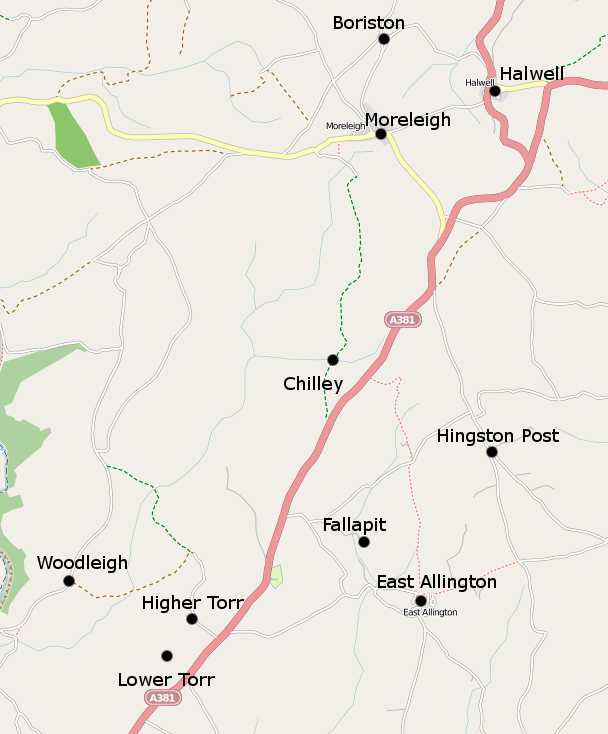
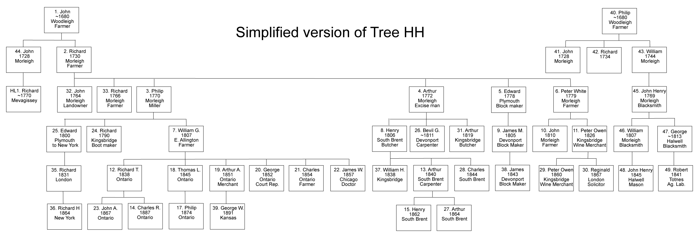

This is a complex tree - it is being actively researched by several people who are descended from different branches. It was originally based on the Vine Tree, which was a subset of the larger study by William Edward Hingston (WEH), although it does not agree with it in every respect. Not all details are yet secure. The links within it have been changed from pointing to the Vine Tree to the WEH files.
The following entries from Morleigh and Halwell (which are less than a mile apart) and Woodleigh are not fitted in elsewhere in these trees. If anyone can see connections that I have missed please let me know.
Morleigh
HINGSTON Mary ?? Apr 1714 Thomas & Elizabeth Of Halwell baptised
3rd Feb 1722 John Hingston married MARY LINNES was this the same John who married Mary Follett in 1727?
HINGSTON ? Sarah 25 Jan 1743 John & Dorothy Of Harberton baptised
27th July 1742 John Hingston buried
23rd December 1768 John Hingston the younger son of Mr John Hingston of Boriston buried. (Boreston is a farm in Halwell)
14th July 1769 Mr John Hingston buried
1771 Robert PAIN otp & Mary HINGSTON, of Halwell. Married by Banns
1781 Richard HINGSTON, woolcomber, md Amey HOLMAN, soj
(could be son of HH#42)
1793 Apprenticeship indentures for John Cole to Richard Hingston for Furlongs; his will gives two properties/farms Folletts and Furlong
3 Feb 1761 John HINGSTON and Jane Hingston GRILLS both of Halwell, married by licence. John signed and Jane by mark. Witnesses Richard HINGSTONE and Henry GRILLS
1 Jun 1762 John son of John and Jane HINGSTON baptised
18 Sep 1764 Richard son of John and Jane HINGSTON baptised
22 Jun 1762 John ELLIOTT of West Alvington and Jane HINGSTON of Halwell married by Banns. Both signed. Witnesses John ELLIOTT and Philip HINGSTON (X)
19 Jul 1763 John WHITE of Wordley and Mary HINGSTON of Halwell, married by Banns. John signed and Mary by mark. Witnesses John WHITE (Snr) and Edward HINGSTON
19 Jan 1768 Robert PRYN of Morleigh and Mary HINGSTON of Halwell, married by Banns. Robert signed and Mary by mark. Witnesses Richard PRYN and John ELLIOTT
4 Apr 1769 William HINGSTON and Mary COLLINS, both of Halwell, married by Banns. Both signed by mark. Witnesses Ann WICKS and Richard HINGSTON
27 Jan 1773 John HINGSTON of Blackawton and Joanna DAMEREL of Halwell, married by Banns. John signed and Joanna by mark Witnesses Robert DAMEREL and Nicholas ANDREWS
25 Mar 1784 John JACKSON of North Huish and Elizabeth HINGSTON of Halwell, married by Banns. Both signed by mark. Witnesses John HOLE and Elizabeth CHADWICK
27 Feb 1786 Edward HINGSTON buried
14 Dec 1786 Ann son of Richard and Ann HINGSTON baptised
23 Jan 1794 John HINGSTON buried
25 Nov 1795 Philip son of Lucy HINGSTON Base Child baptised
21 Nov 1805 Henry MUDGE, bachelor of Diptford and Jane HINGSTON, spinster of Halwell, married by Licence. Both signed Witnesses Henry FORD and Betsey MUDGE
15 Oct 1807 Elizabeth HINGSTON buried
26 May 1808 John HINGSTON buried
29 Mar 1811 Edward HINGSTON buried
21 Nov 1841 Robert son of George and Elizabeth HINGSTONE Halwell Blacksmith baptised (This should be checked - George or William)
Woodleigh
8-Sep 1681 Elizabeth HINGSTON and Nicholas KEAST ? married at Woodleigh
Dec 1718 Nicholas HINGSTON of Blackawton and Mary COWLEY Daug Of John married at Woodleigh
21-Feb 1732 Mary HINGSTON and Richard FOLLETT of Halwell married at Woodleigh
16-Apr 1734 Edward HINGSTON and Mary DAMERILL married at Woodleigh
Edward HINGSTON son of Edward & Mary baptised at Woodleigh 9 Sep 1734
John HINGSTON son of Edward & Mary baptised at Woodleigh 30 Mar 1736
Jane HINGSTON daughter of Edward & Mary baptised at Woodleigh 6 Jun 1738
14-Jan 1737 Jane HINGSTON and Henry GRILLS married at Woodleigh 7-Apr 1740 Jane HINGSTON buried at Woodleigh 14-Jul 1743 John HINGSTON buried at Woodleigh 23-Nov 1743 John HINGSTON of Morley and Dorothy COYTE married at Woodleigh 31-Oct 1744 Elizabeth HINGSTON buried at Woodleigh
Jane HINGSTON daughter of Richard & Joan baptised at Woodleigh 14 Jul 1741 Mary HINGSTON daughter of Richard & Joan baptised at Woodleigh 17 Dec 1745 Elizabeth HINGSTON daughter of Richard & Joan baptised at Woodleigh 15 Jul 1744
6-Aug 1770 Richard HINGSTON of Halwell buried at Woodleigh 28-Feb 1781 Joan HINGSTON buried at Woodleigh
Most of the places mentioned early in Tree HH are very close together, although spread over several parishes whose boundaries in this area are very convoluted with several detached portions. It is only 3.7 miles from Halwell to Woodleigh. There is now a Hingston Farm close to Hingston Post in East Allington but the farm itself is modern and was not shown on maps in the early 1900s.


This tree starts with two men John and Philip, both presumably born in the 1680s in Woodleigh or nearby. They may be brothers or cousins. Both had sons called John, born within two months of each other, and both had sons called Richard. W.E.Hingston shows descendants from all four families, but the records are fairly sparse and it isn't clear how the families link up. He shows John (780) as the father of John (789) and Richard (790), while Philip (778) is shown as the father of John (782), Richard (785) and William (787).
A researcher workng for Margaret Farrow makes a very plausible case for John (780) being the father Richard (785) by his (possibly second) wife Mary Follett. It would account for the use of Follett as a second christian name in later generations of the family. The other Richard (790 in WEH) is probably the son of Philip. In other words, the WEH Tree appears to be in error by swapping over the two Richards, which is not unlikely since they were born two years apart, both in Morleigh. I have accepted that interpretation here but that may not be correct. Thus, in what follows I show:-
John (780) as the father of John (789) and Richard (785).
Philip (778) as the father of John (782), Richard (790) and William (787).
If anyone finds evidence to prove or disprove this reading please contact me.
Until April 2013, this tree only showed the descendants of Richard (785) but now that we have the whole of WEH's study I have added his interpretation of the other links.
Generation No. 1
1. JOHN HINGSTON (780 in WEH) was born (presumably in about 1680-90) in Woodleigh, and buried 9 Aug 1763 in Morleigh. He was a farmer of some standing, farming Lower Chilly, which is a farm in the parish of Morleigh. He is referred to in the parish registers as Mr. John Hingston, which is usually a sign that he was someone of repute. He married MARY FOLLETT 16 Apr 1727 in Halwell; she was the daughter of Richard Follett and Thomasin and had been baptised in Halwell on 14 Aug 1693. Mary died 6 Dec 1731 at Morleigh (TH-M). He is probably the John Hingston [yeoman] of Lower Chilly who had an apprentice in 1728.
(There are two Mary Folletts; one born in 1686 to Nicholas and Elizabeth and the other born in 1693 to Richard and Thomasin; are we sure which one married John?)
40. PHILIP HINGSTON (778 in WEH) of Woodleigh, married MARY LINNIS on 6 Nov 1727 at Morleigh. (It is not clear where this marriage took place. WEH did not have a surname for Mary and there was no marriage at Morleigh at this date - we need to check the Halwell records.) He died 28 May 1771. A note in the register when the son William was baptised says that Philip had not been with Mary for 12 months, so they may have been separated, but they went on to have their son George two years later so were presumably reconciled.
44. JOHN HINGSTON (789 in WEH). Bapt 9 Apr 1728 at Moreleigh, the son of 1. John Hingston and Mary (Follett). WEH says he was in HM Customs in Cornwall and married a Miss HEWETT. There was apparently a John Hingston who married an Anne Hewitt at Fowey in Cornwall in 1746 (which would make him only 18 when he married if the dates are correct see Odds and Ends#64.) WEH has his date of death as 24 July 1742 which must be wrong although there was a burial at Morleigh on that date.
GEORGE HINGSTON (1102 in WEH) Nothing more known of him.
2. RICHARD HINGSTON (785 in WEH) was bapt 28 Sep 1730 in Moreleigh, the son of 1. John Hingston and Mary (Follett), and died 2 Sep 1780 (AH). He married SARAH WHITE of Woodleigh. (The Banns were read in Morleigh on 4 Nov 1761 but the marriage is not listed there, or in Woodleigh - this needs checking); she is probably the Sarah who was buried at Morleigh on 23 Sep 1802. Sarah was the daughter of John White and Joan Bullock who married at South Brent on 4 Feb 1738 and then moved to Woodleigh or Morleigh where Sarah was born. Richard is probably the Yeoman of Lower Chilly who had an apprentice in 1768.
Children of Richard Hingston and Sarah White are:
DOROTHY HINGSTON (927 in WEH) baptised 5 Nov 1762, Moreleigh; m. JOSEPH LINDON alias BISSET on 4 Apr 1786 at Moreleigh (DFHS Index); she was buried on 3 Aug 1806. They had a daughter Dorothy who was baptised at Malborough on 28 Apr 1789 and married Thomas Parnell of Moreleigh at South Huish on 15 Aug 1811. The younger Dorothy made a claim against the estate of 32. John in 1856 (see below). Joseph Lindon age 63, of Burleigh, South Huish, was buried at Malborough on 16 Apr 1827. He died on 11 Apr 1827 (executors' document, will of Joseph Lindon alias Bissett dated 19 Jan 1825). It seems likely that Dorothy and Joseph had at least one other child; in the 1841 census for Plymouth St. Andrew is a Hingston LINDON, age 15. His father Joseph (age 50, so born about 1791) was a merchant and was presumably Dorothy's son.
32.JOHN HINGSTON (801 in WEH) baptised 5 Nov 1764, Moreleigh; d. 9 Jul 1854, South Brent. He married FRANCES GIDLEY on 1 Oct 1794 at South Brent. Frances was buried 26th July 1835, aged 76, (at South Brent?). They had no children, but he adopted his grand-nephew, also JOHN, to whom he was supposedly going to leave his large fortune. I now believe that to be 10. John, son of 6. Peter, who would have been a nephew and seems to have been living with this John at the time of his marriage in 1837 to Eliza Coulton of Rattery. In 1841 Eliza Hingston (25) is living with John Hingston in South Brent; she is possibly the Eliza, born 1815, daughter of 3. Philip Hingston & Dorothy Gillard. In the 1851 census John is shown as living in the west part of Brent Town (i.e. in South Brent), widowed, age 84, born at Morley, and a landed proprietor. He is buried at South Brent, on the south side of the churchyard, with his wife and grand-nephew. Ann Holden has a copy of the will, which describes John as a gentleman, of South Brent. His nephews 11. Peter Owen Hingston (son of 6. Peter) and 8. Henry Hingston (son of 4. Arthur), were executors and everything was handed over to them to put in trust for the maintenance, education and up-bringing of Henry's four sons William, 13. Arthur, 28. Charles and John, also John Hewitt Hingston born 1852 the son of 31. Arthur born in 1819, but when John son of 8. Henry reached the age of 21 he inherited most if not all of it, which included property in South Brent, Woodhouse in West Alvington and also in Buckfastleigh. After the will was made John Hingston snr bought two more dwelling houses gardens and premises in South Brent. He originally left his servant Mary Parnell £110 and Peter Owen Hingston £100, with £150 for each of the said children for or towards a placing out apprenticing etc during their minority. In December 1852 he made three codicils to the will; one to give Peter Owen Hingston a gift of £550 which was not to be called in and another £20 to Mary Parnell. Henry for some reason was revoked as an executor and sole charge was given to Peter who also inherited some furniture. However, the story does not end there. In March 1856 there was a legal case in front of the Vice Chancellor, Sir John Stuart; the plaintiff was Dorothy Parnell, John's niece and the wife of Mr. Thomas Parnell, of Yealmpton, suing by her next friend against 34. William Follett Hingston, 11. Peter Owen Hingston, 8. Henry Hingston, and Thomas Parnell, her husband. It seems that in Nov 1844 John had made an indenture, the effect of which was to pass control of most of 32. John's property to 34. William, together with the condition that some monies were to be paid to other people, most notably £40 to Dorothy Parnell. John and William fell out, and it seems that John's favoured nephew (10. John) was in arrears for rent on properties at Torr and Chapple Wells. John wished to tear up the agreement in Nov 1850, but it did not contain any provision for it to be revoked. However, both John and William considered the trusts to be null and void and they were ignored. John's will (made later) left his money in a completely different way from the provisions of the trust. Dorothy was claiming that the trusts had not been revoked, and was asking for them to be applied in full. The judge found that Dorothy was entitled to her £40, with interest, but that the rest of the provisions of the trust were not enforceable because no one was asking for it. The case was reported in the Daily News and also in Law Reports (3 SM & Giff 337). I believe that Torr and Chapple Wells refer to the farms shown on modern maps as Higher Torr (which is in a detached part of Moreleigh Parish) and Lower Torr (which is in a detached part of Charleton Parish). The farms abut and, significantly, are close to Lower Chilly and Fallapit, both of which are known to have close connections with the earlier Hingstons.
34.WILLIAM FOLLET HINGSTON (802 in WEH) born 28 Jun 1773, bapt. 9 Nov 1773, Moreleigh. Apparently died as an old bachelor, without issue. In the 1851 census he was living with his nephew Thomas Parnell at Bowden Farm, Yealmpton. He is aged 76, unmarried, a retired farmer. He died there in 1862.
ELIZA HINGSTON, (807 in WEH) - this is the only evidence for her so far, where it is said she died 10 Mar 1843 (where?).
Jane & Barry Hingston <barry.hingston@ic24.net> have been to South Brent churchyard and report that there are 3 graves with headstones - There is a John Hingston of Kingsbridge, died 25th October 1883 aged 31 (so born ~1852). This is presumably the grave of the favoured grand-nephew of 32. John above, which matches with the dates of John Hingston, son of 26. Bevil Gillard below.
Next to this is Beable Hingston of South Brent, died 20th April 1899 aged 33 (so born about 1866). This stone is vertical.& there is also a stone on top of the grave inscribed with Selina Hingston, our Mother, died 10th January 1909 aged 68. This would imply she was born about 1841, which is too young to be the mother of John born 1852. She is more likely to be the Selina, wife of 13. Arthur Hingston, with Beable being one of their children.
Further along there is a grave with John Hingston and wife Frances.
REBECCA HINGSTON (795 in WEH) Bapt. at Morleigh, 12 Oct 1767. She was previously listed in Odds and Ends 75. On 20 Jul 1785 in Halwell she married ROBERT HANNAFORD (sojourner), who was born about 1762 in Devon. Witnesses were John Hingston(cross) and William Andrews. They had nine children baptised in Halwell: Elizabeth 1786; Rebecca 1789; Robert 1791; John 1794 and William 1797-1798; at this point the family were described as being ‘of Ritson’ which is just outside the centre of Halwell. Four younger children were also baptised at Halwell: Mary 1799, who married John Yabsley; Harriet 1802 who married Halwell Innkeeper John Hallett; William 1804 and Grace 1807. By 1841 Robert and Rebecca had moved to the centre of Halwell with their son, William, who was also a stonemason. They were living in a property now known as 1 Church Cottages, where Robert worked as a stonemason. The cottage, which was owned by the parish, had a piece of arable land and a small apple orchard attached. On 19th February 1841 Rebecca, then aged seventy three, was a deponent at a cornoner’s inquest into the death of John Cholwich. The inquest was held in the New Inn in Halwell and was conducted by the coroner Joseph Gribble. During her evidence Rebecca stated that she had spent her whole life in Halwell. The deceased, John Cholwich, had been an inmate of Halwell poor house for some time and was said to be ‘out of his mind’ and unable to tolerate wearing clothing. According to his death certificate, Robert Hannaford died on 16th June in 1842, although his gravestone reads 1840 and the burial register entry is for 1841. He died of asthma at Halwell and his daughter in law Mary was the informant. Rebecca was the executrix to Robert’s will and signs quite clearly. He leaves her a property known as Newwill (New Mill?) in Diptford. In 1851, the widowed Rebecca and her son, William, appear to still be at 1 Church Cottages, together with two Yabsley grandchildren of Rebecca. Rebecca died of old age on 9th December 1851 at Halwell and was buried there on 12th; her son John, of Harbertonford, Devon was the informant.
RICHARD HINGSTON (WEH gives him the number 923 but that is a number he has given to someone else).
43. WILLIAM HINGSTON (787 in WEH) born 1744 at Morleigh, the son of 40. Philip Hingston and Mary; However, a note in the register says that Phillip Hingston her husband had not been with her in twelve months before the child was born, so although William got his name from Phillip it must be presumed he was not the father. William married Mary; she was probably MARY COLLINS and they were married at Halwell on 4 Apr 1769, (but one of the witnesses was Richard Hingston, which isn't the name of his father or brother).
MARY LINNES HINGSTON (796 in WEH) Bapt. at Morleigh, 6 Jul 1772. (Check with original - it would make more sense if the middle name was Collins or the mother was called Linnes)
33. RICHARD HINGSTON (800 in WEH) baptised 8 Apr 1766, Moreleigh, the son of 2. Richard Hingston and Sarah (White). and died 5 Feb 1829. Married ANN, of Ashprington. (Accordiing to WEH there was apparently one daughter, Sarah (902 in WEH), who supposedly married a Thomas Flamank of Totnes and WEH apparently had a Flamank pedigree so there must have been some evidence. There is no obvious sign of the wife or daughter in the 1851 census and neither Richard's nor Sarah's marriages appear in the DFHS index.) He is probably the Richard of Boriston who died 5 Feb 1829. According to his will, which was written in May 1828, when he was infirm of body but of sound and perfect mind and memory, he has the title of Richard of Boriston, gentleman, and owned considerable property. His wife is Ann and he had three daughters. Richard left his dwelling house named Furlong to his wife Ann plus the orchards, herb garden, stables and Little Courtlage. He also had a property named Folletts. Apart from an error of 10 days in the date of his death, the only discrepancy with WEH is the name of the daughter. Richard was buried at Morleigh 18 Feb 1829, aged 64. His wife Ann is buried with him on 12 Feb 1837, aged 64 (so also born c. 1765). From a MI at Morleigh; 15 Feb 1829 Richard Hingston of Boriston [Gent] buried.
GRACE HINGSTON. Bapt 23 Dec 1788 at Halwell, was unmarried at the time of her father's death
3. PHILIP HINGSTON (806 in WEH) was baptised 26 Apr 1770 in Moreleigh, the son of 2. Richard Hingston and Sarah (White). He married DOROTHY GILLARD on 17 May 1796 at East Allington. WEH described him as a woolcomber but on his death certificate he was shown as a Miller. Dorothy is believed to have been the daughter of Nicholas Gillard, a tallow chandler of Kingsbridge and his wife Mary. Nicholas was the brother of Bevil Gillard whose daughter marred Philip's brother Arthur, so the two Gillard women were cousins. Their common grandparents were Thomas & Dorothy Gillard of Charleton (This Gillard information from Anthea Ashfield <weston4@netcom.ca>). Dorothy died in 1840, on 17 Oct, at Kellaton, Stokenham; Cause of death "dropsy in the chest." (GRO death regn DYC 426061). Dorothy was perhaps living with her daughter Mary and son-in-law Thomas Lome. The informant was a woman residing in Halsend (Hallsands?). In the 1841 census Philip was living at Washbrook Mill with his daughter Jane, and her future husband Richard Willing. Philip died, of a bowel complaint, on 15 Jun 1844 at Washbrook Mill, Dodbrook, aged 73 (GRO death regn DYA 968020).
According to William Gillard Hingston, there were 5 sons and 5 daughters of this marriage. He was the youngest son and the sons were all older than the daughters. (See WEH 806 for details)
Children of Philip Hingston and Dorothy Gillard are:
JOHN HINGSTON, d. Kingsbridge (young) (812 in WEH).
PHILIP HINGSTON, bapt at Aveton Gifford 21 Jun 1797 and died 30 Mar 1813, aged 15 years, buried at Moreleigh, described as being of "Kings Ridge" = Kingsbridge? (811 in WEH).
MARY HINGSTON. (813 in WEH). Bapt 10 Jun 1810 at Kingsbridge. Married to THOMAS LOME of Stokenham on 15 Sep 1838 and moved to London. In the 1851 census the couple appear as visitors of Nicholas Gillard, a Grocer, and his family at 101 Fore St, Kingsbridge. Thomas is aged 35 (so born c. 1816), a Gentleman, born Stokenham; Mary is aged 40 (so born c.1811), born Devonport. There is presumably some Gillard family connection with her mother. Thomas is believed to have died in the first quarter of 1857 in the Kingsbridge District, and in 1871 Mary is shown as living in St David's, Exeter, aged 62. It is believed there were no children of the marriage (additional information from Michael Palmer).
SARAH HINGSTON. (814 in WEH). Bapt 5 Jul 1812 at East Allington. Married in 1839 to JOHN HOLDSWORTH of Leeds. She died in May 1853. According to Lavinia she went to the Isle of Wight.
ELIZA HINGSTON. (815 in WEH). Bapt 24 Mar 1815 at East Allington. Philip was described as a husbandman of Instart (a farm). In the 1841 census she is probably the Eliza Hingston aged 25 living with her great uncle, 32. John, presumably as a housekeeper. She married JOHN NICHOLAS (of Town Rothey according to the WEH Tree), probably in Dec Qtr 1849 in East Stonehouse, and had issue:- Emma, Mary Hingston, Bessie F., Elisa, Alma, and Lavinia F. In the 1851 census for Devon, JOHN NICHOLLS (sic), age 28, was living with his wife Eliza (age 34), at Binnamore, which is a hamlet/farm just north of South Brent. (I don't know of any candidate location to be Town Rothey). He is described as being born at South Brent, she as being born at East Allington. Their daughter, Emma Jane, was 7 months old. (At the time of writing the WEH tree (1906) Mrs Eliza Hingston Nicholas was believed to be alive, and living with her daughter, Mrs Alma Nicholas Horsewell, near Newton Abbott, Devon.). Her descendant is Christine Hatt <christine_hatt2@non.hp.com>.
JANE HINGSTON. Bapt 4 Oct 1818 at East Allilngton, when her father was described as a labourer, of Instart. Married to RICHARD WILLING, in 1843 (Kingsbridge Register District). According to WEH (where she is No. 816) he was a miller of Chittesford(?). There is a Chittlesford Mill in Halwell. It would seem that Jane died in childbirth; they had a daughter Dorothy Jane who was bapt at Halwell on 31 May 1845, died at Loddiswell and was buried at Halwell 15 Jun 1845. Jane died at Halwell 3 Jun 1845 aged 27 so birth date c 1818. But it now seems that they had an older child, John H.(Hingston?) Willing, born 3 Jan 1844. But there was to be more upheaval in Richard's life. He married Elizabeth Harley in Totnes in the March quarter 1846 (FreeBMD) and had children Richard Arthur Willing born Chittlesford Mill, Halwell, 20 Jan 1847 and Mary Elizabeth Willing born Lurgecombe Mill. Ashburton on 20 Sep 1849. Elizabeth seems to have died; there is a FreeBMD entry for an Elizabeth Willing Sep 1849 Kingsbridge. It could be that she too died in childbirth. There was another entry for Jun 1850 in Plympton St. Mary, so these results need to be treated with caution. Richard seems then to have married a third time to Susanna Sherwill in Newton Abbott Mar Qtr 1851. Richard then emigrated to St. Malachy, Beauharnois County which is near Montreal where he continued as a miller, but in 1858 he was sentenced to 10 years in prison for Arson somewhere in theUnited Counties of Leeds and Grenville, the first county bordering on the St. Lawrence River east of Kingston. His death (due to consumption) and burial took place on the same day, 5 Jun 1865. John H, the son of his first wife Jane Hingston was brought up by his grandfather, learnt the trade of milling and emigrated to the US. Note that there are There are several Willing and Hill families involved as Millers at Chittlesford (Halwell) and New Mill (Loddiswell). Several of the men are called Richard and the women called Amy, so disentangling them may be tricky.
ELIZABETH (BETSEY) HINGSTON. Bapt 11 Feb 1821 in Slapton, when Philip was described as a labourer, and died in May 1864. (817 in WEH)
4. ARTHUR HINGSTON was baptised 30 Jan 1772 in Moreleigh, the son of 2. Richard Hingston and Sarah (White) and died in 1824, drowned at sea in the exercise of his duties as an excise man. At the birth of his son Arthur he was described as a tide waiter, which fits. He married ELIZABETH (BETSY) GILLARD 19 Jan 1804 in Kingsbridge, by Licence, which describes him as a bachelor and her as a spinster. In 1796 Agnes Downing was listed as being an apprentice to Arthur Hingston, Lower Chilly. According to Ann Holden (AH), Agnes was a poor apprentice, baptised in Morleigh on 5 Jun 1786 to William and Mary, probably taken from the workhouse to work in a private home). Betsy (not Elizabeth) was the daughter of Beable and Grace Gillard (nee Nowell) and had a twin brother Thomas, both baptised on the 19 Sep 1780 (according to AH - where, Kingsbridge?) (According to Jim Robbens (JR) she was born 1 Feb 1779 in Charleton). Four children of Arthur and Betsy are mentioned in WEH - William, Henry, John and Edward. AH has a copy of a removal order from Kingsbridge to Littleham dated 22 Nov 1825 (not the other way round as had been reported on this site before). It says "Upon the complaint of the churchwardens and overseers of the poor of the parish of KINGSBRIDGE ...... that Elizabeth Hingstone, Henry her son aged 20 years, Bevill Gillard her son aged 14 years, Charles her son aged 12 years, Jane [presumably Sarah Jane] her daughter aged 9 years and Arthur her son aged five years have come to inhabit the said parish of Kingsbridge not having gained a legal settlement there, ...... the lawful settlement of Elizabeth and her children is in the parish of Littleham ...we do require you the churchwardens and overseers of the poor in the parish of Kingsbridge to convey Elizabeth and her children from and out of the said parish of Kingsbridge to the said parish of Littleham and then to deliver them to the churchwardens and overseers of the poor of the parish there." She wasn't fit to travel by reason of sickness and infirmity and it would dangerous for her to do so, she was also classed as a pauper. The removal order would match with Betsy being widowed - she would presumably have been a charge on the parish and would have been returned to her birthplace. However, being unwell, the removal order was suspended until she was able to be moved. TH-M shows that she was buried with her parents at St Edmunds Church, Kingsbridge on 12 Jan 1826, age 46. If this reading is correct, the children would have been orphaned, although some would have been old enough to look after themselves. The link to Bevil/Beeble Gillard is presumably the source of the rather unusual name Beable which is mentioned in the Odds and Ends page.
(Arthur is 805 in WEH where he is shown as married to Miss Hewlett and the father of John Hewett Hingston - which are shown below under 31. Arthur who was the son of 4. Arthur. It seems that WEH was conflating the two generations. There are various other discrepancies between WEH and Tree HH which follow from this error. None of the children here can be identified in WEH's study with the exception of 8. Henry.)
Children of Arthur Hingston and Betsy Gillard are:
5. EDWARD HINGSTONwas bapt. 3 Jul 1778 in Moreleigh, the son of 2. Richard Hingston and Sarah (White), and died 9 Oct 1856 in Plymouth. He married CHARLOTTE MOULD. (804 in WEH where he is described as being 'of Mageressay' - given that his son James is described in the 1851 census as having been born at Mevagissey in Cornwall he presumably lived there for at least some of his life.) He established a business of block and pump making and the repairing and adjusting of ship's instruments under the firm name of Hingston and Son.
(The CFHS marriage index shows an Edward Hingston marrying a Charlotte Rosevear on 22 Jun 1802 at Fowey - the name Mould above comes from the WEH Tree and is reflected in the name of one of the children. However, there is scope here for confusion or error).
In the 1841 census they were living at Southside St, Plymouth St Andrew; Edward and Charlotte with children Edward, Sarah and Mary. In the 1851 census the same five were living at South Side St., Plymouth St. Andrew; son Edward (age 35) and daughters Sarah (32) and Mary (10). These three children were all unmarried and had been born at Devonport.
Will. d 9 Oct 1856. Pump and Blockmaker. Executrixes Sarah J W Hingston and Mary F Hingston. Bequests to 3 children of James Mould Hingston his son, residue to 3 daughters, Charlotte wife of Thomas Richards, Master Mariner, Sarah and Mary as above. (AJH).
Children of Edward Hingston and Charlotte are:
CHARLOTTE HINGSTON b. Abt 1804, Fowey, Cornwall; m. THOMAS RICHARDS. (She is 906 in WEH who doesn't mention a husband and says she died in 1872. FreeBMD doesn't show the death of a Charlotte Hingston but a Charlotte Richards of the right age died in Plymouth at the end of 1871.)
This may not be the complete list - there is a large gap between the first three, born in Mevagissey (up to 1807) and the last three (after 1814) born at Devonport.
It looks as though Peter and Grace were separated, at least at the time of the 1851 census. Grace Hingston, age 64, a landed proprietor, was living alone at Jones Cottage, Plympton St Mary. She had been born at Diptford. Peter Hingston, married, an annuitant, was lodging at Castleford Farm, Ipplepen, with Amos Morgan and his wife. Her gravestone at Diptford Churchyard, reads "Sacred to the memory of Grace Hingston wife of Peter White Hingston and daughter of Henry and Grace Cutmore of Horsebrook, South Brent, who departed this life 19 Aug 1868, aged 81 yrs and also Sarah Hingston daughter of above died Feb 26th 1895, aged 86 yrs". On the side kerb is a worn legend:- "Also Dorothy Anna Hingston"; presumably this refers to the second Dorothy Anna.
Children of Peter Hingston and Grace Cutmore are:
SARAH HINGSTON (1258 in WEH) born 31 Dec 1808, Malborough; d. 16 Feb 1895. At the 1851 census she was probably living with her sister, Grace, at Orchard Farm, Yealmpton, although her age is described as 29 when she should have been 42. She died, apparently unmarried, 26 Feb 1895 aged 86 years and is buried with her mother.
GRACE CUTMORE HINGSTON (872 in WEH) born 4 Jul 1817, Diptford and baptised there on 27 Jul 1817; father described as of Bradley, Yeoman; m. PHILIP HORTON, 22 Jun 1841, South Brent. By the time of the 1851 census she was widowed; she was living (and presumably farming) at Orchard Farm, Yealmpton, with 5 children, Henry (age 11), Grace (8), Elizabeth (7), William (5) and Margaret (3). All the children were born at Yealmpton. She died 15 May 1872.
WILLIAM FOLLETT HINGSTON (873 in WEH) born 1 May 1819, Diptford. He is listed as a Bounty Immigrant to New South Wales, arriving on the ship Earl Grey on 24 Jun 1841 (aged 22) when he was described as a Shepherd. In 1851 we was a witness in a court case at Maitland when he was described as a superintendent at Kentucky Farm, New England, New South Wales. It is probably his death that was registered in 1886 at Liverpool, New South Wales.
No evidence of any marriage has been found.
DOROTHY ANNA HINGSTON (not listed in WEH) b. Apr 1826, Diptford (presumably a twin of Peter Owen). (I am not sure she exists - in my listing of Diptford PR entries only Peter Owen is shown)
SUSAN PHEBE HINGSTON (876 in WEH) born 10 Jul 1828, Diptford, bapt there on 7 Sep 1828. WEH reported that she was living at Ugborough in 1903, where he presumably met her, and FreeBMD shows that she died in Exeter in June Qtr 1909 in Exeter, aged 80.
(I am grateful to Peter Hingston <46walter@onetel.com> for the extended details of this family)
The following reading is based on the assumption that the John Hingston (799 in WEH) who married Christian Whiteway is the same man as John Henry Hingston (a widower) (924 in WEH) who married Elizabeth Goodridge. Both were supposedly born in Morley in 1769. We have not yet searched exhaustively for the death of Christian which is necessary for this reading to be correct.
JOHN HINGSTON (799 in WEH), the son of 43. William Hingston and Mary Linnis, was bapt 10 July 1769 at Morleigh; and married on 7 July 1793 at Morleigh CHRISTIAN (or CHARLOTTE) WHITEWAY of Ashprington. No issue reported. It is presumed that Christian died because he seems to have married secondly (as John Henry Hingston) ELIZABETH GOODRIDGE 26 Dec 1798 at Halwell. He was described as a widower. He died in 1850. In the 1841 census he is listed as 72 and a Blacksmith, living at Halwell. Elizabeth is shown as aged 63 so born about 1778.
There is a grave at Halwell which reads. "In Memory of John son of John and Elizabeth Hingston who died the 10th day of January 1824 aged 24 also Susannah their daughter who died 20th day of June 1843 aged 27.
John Hingston died 23rd day of December 1816 aged 77 (which would imply he was born 1739, but an age of 47 would be consistent with the dates above).
Elizabeth wife of the above 21st day February and the date COULD be 1852. and her age could be 74. (If so she would have been born c. 1778 which is consistent)
ANTHONY HINGSTON (933 in WEH), bapt 21 Oct 1810 at Halwell, died in 1895. A Shoemaker in 1841. A Cordwainer in 1851. He married ELIZA MARY ANNE THOMAS in Jun Qtr 1861 in Newton Abbot. She may well have been married before but there is no sign of any children. They were living in Newton Abbot in the 1871 census when he was described as a Lodging House Keeper and she was age 56 and born in Guernsey. They only had one Lodger. Eliza must have died by 1881 because by then he was a widower, age 68, living at the London Inn, Stoke Fleming, whose landlord was William Prowse; Anthony was described as an annuitant (note that the London Inn at Stoke Fleming is not the same as the London Inn at Halwell/Moreleigh). In 1891 census he was living as a Boarder in the house of Ann Prowse at Southwood, near Strete (Blackawton Parish); she was the widow of William Prowse. Although the census does not refer to the relationship it is likely that Ann Prowse was his sister. WEH says he died in 1895.
ANN HINGSTON (934 in WEH) bapt 6 Jun 1819 at Halwell and married WILLIAM PROWSE in Jun Qtr 1848 in Totnes. They are almost certainly the Ann and William Prowse who kept the London Inn at Stoke Fleming (not to be confused with the London Inn at Morley Cross).
25. EDWARD HINGSTON was the son of 3. Philip Hingston and Dorothy (Gillard). He was baptised at Plymouth St Andrew on 26 Sep 1800. He went to London where he learned the tailoring trade but seems to have moved to Manchester as he married MARY BOWDEN on 20 March 1825 at St. John's, Manchester, when he was described as a tailor. Several of the children were born either in Stockport in Cheshire (about 8 miles south of Manchester), but the family then moved to New York (city) between June and October 1841 and there opened a shop in Maiden Lane, between Nassau and William Sts. WEH says that Edward got up the dress of the Hussars in the American Army, with assistance of General McCear, and Capt. Charles. According to the probate records (dated 25 Jun 1852),
"Edward Hingston died about the last of April or 1st of May ult." (Petition - New York Wills and Probate Records, 1659-1999). There was an issue with creditors. Hingston owned a grocery store. His wife Mary died 2 Jan 1856 in Brooklyn.
(Edward is 809 in WEH, who gives a similar story but there are discrepancies. He says he was born in Mageressay (Mevagissey in Cornwall) in 1800 and that some of the children were born in Stockport California but we now know, thanks to the work of Jane Sweet, that several of the children were born in Stockport, Cheshire. It is not clear where WEH's reference to Stockport California comes from. WEH says that Mr Edward Hingston left the east and tried his fortune elsewhere (is this where the reference to Stockport, CA came from?) where, like many others, he dropped what he had and returned to New York. WEH says that he died 29 Jun 1849 of Cholera and his body was removed from the city (apparently there was a cholera epidemic and the bodies were taken to an island in the river).
The children of Edward Hingston and Mary Bowden are, according to WEH:-
SARAH HINGSTON (859 in WEH) Born in London 2 May 1835; married in New York, 22 May 1852, to JOHN A. MOORE, of Tuckahoe, N.Y., who died 9 September 1883. They had five children - Charles, Charlotte, Robina, Mary and Henry. WEH reported that Sarah was living in Brooklyn, N.Y in 1903 and in 1910 she was living with her son Henry W. (Harry) Moore who was a decorator. She is not listed in 1920.
WILLIAM HINGSTON (not shown in WEH). Born and died in Stockport, Cheshire, England (1838-1839)
CHARLOTTE HINGSTON (861 in WEH) Born at Stockport, Cheshire, 1839; married 12 July 1864, WILLIAM ALFRED HOAR, who died 12 August 1885. They had two children, Alice and William.
WILLIAM HINGSTON (857 in WEH) Born at Stockport, Cheshire, 1840.
ELIZA HINGSTON (860 in WEH) Born in New York 15 Jan 1846 and died 7 Jan 1895. Was married to JOHN LOCKWOOD and had children, John, Minnie, Eliza, Leslie, Nellie, James and Edward, all of Boston, Mass.
ALICE BOWDEN HINGSTON (862 in WEH) Born at New York, she married firstly CHARLES FURBUSH of New York, and had three children - Frank, Alice and Persis. On 24 Dec 1878 she married secondly JOSEPH W. SWITZER in Brooklyn. Neither of her marriages appears to have been blissful. She died in 25 Dec 1890 (NY Death Index)
24. RICHARD HINGSTON was the son of 3. Philip Hingston and Dorothy (Gillard). (He is 810 in WEH who says he was born 1790 at Kingsbridge and that he went to Boulogne but has no further details. In fact he was baptised at Plymouth St Andrew on 13 Feb 1803 which matches with his age in the later censuses. Learned boot and shoe making and moved to Boulogne, France, where he was in business for many years. He is probably the Richard who married ANNE GERATY at St Mary the Virgin in Dover. It is not clear what happened to Ann. The censuses for 1841 (St. Margaret Westminster) and 1851 (St. Anne Soho) give Ireland as her place of birth. She is 40 and 52 respectively. In 1841 Richard is 37, bootmaker born Plymouth. In 1851 he is 48, shoemaker born Plymouth. But in 1861 an Ann Hingston, 65, married, shoe binder, born Kent, is a lodger at 12 Hollen St. St. Anne Westminster, and on 23 Jan 1871 an Ann Hingston, 75, occupation unknown, died in the Earl's Court Workhouse. Her cause of death was asthma and pneumonia. Occupation unknown. There is no proof that these entries all refer to the same Ann Hingston.
Richard later seems to have taken up with HARRIETT KUPKE. She had been married on 24 Jul 1848 to Edwin Hunt, Mariner, at St. Mary Whitechapel. Her father William Kupke was also a mariner, possibly with the East India Company, and was of German extraction, having been born in Hamburg where he joined the 17th Dragoons in 1782. He died in about 1835. Harriet was born 1 Dec 1823 in Anchor & Hope Alley and baptised 28 May 1826 (Parish register of St. George in the East). By 1861 she is living as Richard's wife but no marriage has yet been found. She is 35, born Shadwell. Living with them is her son William Hunt, 10, born Whitechapel. Richard is 57, bootmaker, b Plymouth. In 1871: St. Mary Newington, Richard is 68, boot riveter. b. Plymouth. Harriet and son John are also boot riveters. In 1881: Camberwell. Richard is 78, bootmaker.
Richard died 24 Mar 1886 at 3 Green Hundred Road in Camberwell. Harriet died on the same day in the Camberwell Infirmary. Age 62, widow of Richard Hingston bootmaker 3 Greenhundred Road Peckham Registered 29 Mar 1886. Informant Chas. Bourne, steward Camberwell Infirmary. Richard and Harriet were buried on 30th Mar 1886 in Camberwell Old Cemetery.
Jane Sweet <j.oak.sweet@gmail.com> is researching this family.
The children of Richard and Ann Geraty are believed to be:-
MARIANNE CHARLOTTE HINGSTON, born 29 May 1829, baptised 21 Nov 1829 at the English Chapel Boulogne. She married ROBERT NEWBITT widow Tailor 23 Aug 1853 Epworth Lincolnshire. Died 22 Aug 1906 in Buxton, Norfolk.
JANE DOROTHEA HINGSTON born Boulogne 12 Feb 1831 who married JOSEPH FAIRMAN, Groom, on 14 Feb 1856 St. Luke's Chelsea. Joseph Fairman died 18 Dec 1864 in Chelsea. Jane married CHARLES EDWARD WHIFFING, hairdresser, on 31 Dec 1874 in Battersea and died there on 5 Nov 1901.
RICHARD HINGSTON b. 4 Dec 1833 Boulogne (Tables decenniales 1833-1862). Richard volunteered for the Royal Navy (1854-1857) and sailed on HMS Nankin to the Opium Wars in China where he was admitted to the Royal Naval Hospital in Hong Kong on 19 Oct 1855 with syphilis, presumably not acquired on active service. He was invalided and discharged from the hospital on 17 & 18 Mar 1856. On 12 Dec 1856 he was discharged to HMS Winchester, which was returning to England. He was finally discharged sick on 14 May 1857. In about 1869 (according to his death cert.) he went to New Zealand where he worked as a labourer or gardener. However between 1886 and 1892 he appeared eight times in the Police Gazette, mostly with convictions for larceny, for which he received sentences of a few weeks or months. These offences took place in Auckland, Napier and Wellington. He used the alias of "George Thomas" for a couple of his crimes. He was reported to be about 5' 7" tall, which is consistent with his Royal Navy record, and of fresh/fair complexion, brown hair and eyes, medium mouth, nose and chin, but he is reported to be blind in his right eye and hard of hearing. The Wellington directories of 1896, 1900 and 1905 list a Richard Hingston, seaman, at the Ohiro Benevolent Home on Cuba Street, the same street as given on the death registration. He died on 14 Oct 1906. The death certificate has a space to list a spouse but this has been left blank. (WEH has him as 923, born in London, but with no further details). [Interestingly, there was another Richard Hingston, a sailor born in England in 1837, who was jailed in 1880. The physical characteristics are very similar, but this man had eleven previous convictions, and scars on both cheeks.]
ELIZA HINGSTON b. 28 Oct 1835 Boulogne (Tables decenniales 1833-1862), m. FRANCIS COOMES, Bootmaker 3 Jul 1856 St. James Westminster.
JOHN HINGSTON b. 12 Jun 1838 Crown St., St. Giles Middlesex. Died at 48 Marshall Street, St. James Westminster, 11 Sept 1854,"cholera 4 days congestion certified." The informant was his mother Ann Hingston of the same address. Marshall Street lies within the Broad Street cholera area as defined by John Snow's cholera map, which was produced in 1854. It was this map that first led Snow to identify cholera as a water-borne disease and John's death must be one of the 40 deaths recorded on that map in Marshall Street. Snow worked out that most of the victims drank water taken from the pump in Broad Street. In a now famous intervention he persuaded the authorities to "remove the handle from the pump" so people had to use a different pump: the outbreak died out. When someone dies young their family often say they "hope some lesson can be learned from their life". In John's case that is most certainly true.
The children of Richard & Harriet Kupke are believed to be:-
JOHN KUPKE HINGSTON b. 4 Oct 1857 Greenwich. (Mother Harriet Hingston formerly Kupke)
GEORGE HINGSTON b. Deptford 5 Nov 1859
ALICE KUPKE HINGSTON b. Newington Surrey 13 Jan 1862, married JAMES FRANCIS, Bootmaker 27 Jan 1881, All Saints Church, Newington, Surrey.
ARTHUR HINGSTON, born 5 Jun 1863 Newington Surrey
EMMA HINGSTON born c. 1866 Camberwell Surrey. Married CHARLES JONES, railway guard, 14 Mar 1889 in All Saints Church, Newington, Surrey.
William Gillard7. WILLIAM GILLARD HINGSTONwas born 12 Aug 1807 in East Allington and baptised at Plymouth St Andrew 16 Oct 1807, the son of 3. Philip Hingston and Dorothy (Gillard). He emigrated to Canada in 1831/2 where he married ELIZABETH TRUDGEON at Victoria Square, York County, Ontario, Canada, 19 Jul 1836. Elizabeth had been born in Cornwall, near Penzance. He is 818 in WEH. In 1858 the family moved to a farm near Ainleyville, Dingle Post Office, Huron County, Ontario. The name of village and post office were afterwards changed to Brussels.
Mr. Hingston was well known and highly respected as one of the pioneer farmers of that section. He died 25 March 1884, surrounded by his wife and six of his then eight living children.
Children of William Hingston and Elizabeth Trudgeon are:
PHILIP HENRY HINGSTON, born at Victoria Square, 22 Feb 1837, died 7 Jan 1860 (820 in WEH).
REBECCA HINGSTON, born at Victoria Square 5 Jan 1840. Married 15 Feb 1865, to JOHN CARDIFF, of Brussels, formerly of Smith's Falls, Ontario. She died 25 Jul 1874, having had five children - Elizabeth Margaret, Alice Rebecca, Richard Earnest, Nelson Homer, and William. (822 in WEH).
WILLIAM HINGSTON, born at Victoria Square 10 Oct 1841. Married 29 Jul 1871, ELLEN TEMPLETON, of Joliet, Illinois. He was for many years connected to the nursery business, but in 1882 removed to Kansas, near Larned (?), and then engaged in farming. His wife died in 188_. He afterwards moved to Missouri, where he married again, and there died, 16 Oct 1891, leaving no issue. (823 in WEH).
MARY HINGSTON, born at Victoria Square, 1 Mar 1843, and died 21 Jul 1844 (824 in WEH).
JOHN HINGSTON Born at Victoria Square, 17 May 1847, and died in San Francisco, California, 1869, December 1869, unmarried. He went to Mitchell, Ontario, and worked at cabinet making, and to London, Ontario, in 1864. Was a member of the London Voluntary Infantry for four years. (826 in WEH).
EDWARD ALFRED HINGSTON Born at Victoria Square, 14 October 1849 (827 in WEH).
Lavinia (on r)LAVINIA JANE HINGSTON, born 19 Sep 1855 at Victoria Square, Markham County, Ontario (831 in WEH). She was a court stenographer - in 1903 at Chicago, Illinois and in 1907 at Seattle, Washington, but her obituary in the Brussels Post (15 May 1946) says that she also held positions in Philadelphia PA, Joliet IL, and Washington DC. It is virtually certain that she typed the tree listed on this web site as the 'Vine Tree' which is now subsumed into the WEH tree - she was known to her family as Aunt Vine. Because of that, we can be reasonably certain about the information from the WEH Tree relating to her siblings and probably also to her aunts, uncles and cousins, at least in outline. She married, on 12 Oct 1920 at the Church of the Epiphany, Washington, D.C., by which time she was 65, FREMONT MANNING CLAFLIN, who died 11 Sep 1934 in Washington DC. He had been married before and had children, from whom Rick Tucker <RickTucker@alum.mit.edu> is descended. She returned to Brussels in 1941. Lavinia died 6 May 1946 in Brussels, Ontario, aged 91. She had no children. Her obituary says she "made many friends by her pleasant smile and winsome personality". In her will dated 5 Feb 1941 she left her property to nephews and nieces. The photo shows Lavinia on the right and her husband Fremont on the left. In between is Lavinia's brother 20. George and his wife Anna.
EDMUND HINGSTON, born at Brussels (Ainleyville), 10 October 1859; died 7 Aug 1860. (833 in WEH).
ALBERT HINGSTON. Born at Brussels, 31 December 1862. Learned the trade of machinist at Brussels; afterwards moved to Joliet and worked in the Illinois Steel Works there; returned to Brussels, and afterwards went to Winnipeg, Manitoba, where he died of Typhoid fever, 16 February 1884, unmarried. (834 in WEH).
EARNEST HINGSTON Born at Brussels, September 1864, and died September 1866. (835 in WEH).
A child HINGSTON, died in infancy.
8. HENRY HINGSTON (127 in WEH who shows him with the wrong parents) was born 24 Mar 1806 and baptised on the 30 Dec 1806 at Dodbrook, the son of 4. Arthur Hingston and Betsy (Gillard). He married MARY HURFORD 17 Mar 1834 in Dodbrooke (DFHS Index); she was born about 1817 at Wellington in Somerset. In the 1851 census the family are living at South Brent, in the town; Henry is described as a Butcher. Mary died of hepatitis on 9 Nov 1854 (AH has a copy of her death certificate). By the 1861 census Henry had moved to Mount St in Plymouth, (name spelt Hengestan) He was buried 27 Feb 1866 (where - possibly South Brent). (Some of the following information is from Ann Holden (AH), who is Henry's great great granddaughter.
37. WILLIAM HENRY HINGSTON, (424 in WEH) baptised 18 Feb 1838, Kingsbridge. He was originally shown with three children but these have been reassigned to HA#70 William Henry Hingston.
EMMA HINGSTON, born 8 Sep 1850, South Brent, and died 22 Oct 1851.
JOHN HINGSTON (890 in WEH, who shows the wrong parents), born 22 Apr 1852 (GRO birth certificate) at South Brent; father described as Butcher (copy of certificate from Michael Palmer). In 1881 John, aged 28, Land Owner, born South Brent, is living with Harriett Hingston (widow of 11. Peter Owen Hingston) (presumably in Kingsbridge). The fact that he is described as a land owner lends credence to the idea that he is the great nephew who inherited from John Hingston in 1854, although it is not clear why he was singled out for favour as he would only have been 2 at the time. He was also described in 1881 as Harriett's nephew, which is not strictly correct since 8. Henry and 11. Peter were cousins not brothers. This is presumably the John Hingston who died 25th October 1883 aged 31 and is buried at South Brent. In his will he made Peter Owen Hingston his sole Executor, and he made bequests to his brother Beavel, his brother Charles, to the children of his brother Arthur and to his friend Miss Tryphena Eddy. The remainder was to be shared between his cousin Peter Owen Hingston, his cousin Reginald Hingston, his cousin Grace Elizabeth Hingston, his cousin Harriet Anniss Hingston, his cousin Sarah Phoebe Hingston and his cousin Dorothy Mary Anna Hingston. The will was written 12 Mar 1883. According to his death certificate it would seem that his huge inheritance did him no good at all, as he died from Delerium Tremens 4 days and Serious Effusion on back 24 hours, Peter Owen Hingston, his cousin was present at his death. It looks like he drank away his inheritance, which is even more poignant given that Peter Owen was a wine merchant.
BAVELL (or BEABELL) HINGSTON (891 in WEH, although with the wrong parents), baptised 7 May 1854 at South Brent. In 1871 he was living with his brother Arthur. This is probably the Bavell Hingston who was buried 19 Mar 1909 aged 56 (info from AH).
26. BEVIL GILLARD HINGSTON. Born about 1811, the son of 4. Arthur Hingston and Betsy (Gillard). On 15 Jul 1832 he married BETSEY COLLINGS at Maker on 15 Jul 1832 (IGI and DFHS Marriage index). Betsey was the widow of John Collings, who she had married by Licence on 10 May 1819 at St Blazey in Cornwall. She had been born BETSEY HARVEY, possibly the daughter of Roger Harvey, who witnessed her first marriage. It seems the family had a house at St Blazey in Cornwall although Betsey and her sisters were born in Stoke Damerell. Bevil Gillard was a carpenter by trade and was in the Royal Navy from 5 Sep 1835 (age 24) to 13 Jan 1855 (TNA ADM 29/23/422). There are several records of him allotting some of his pay to his wife Betsey. He would probably have learnt his trade as a civilian at the Dockyard in Devonport before going to sea. Bevil died at Charlestown, St Austell (certificate - seen by Ann Holden) on 18 Jul 1869, aged 60. His death was described as being from excessive use of spirits, Delirium Tremens 6 days. It seems that his wife Betsy died just before him, at the same address, since his certificate is No. 432 and hers is No. 431. The record office in Cornwall report that they do not appear in the 1861 census there. It would be good to find them in the 1851 and 1861 censuses to check for other children.
They had at least one child:-
BETSEY GILLARD HINGSTON would have been born about 1832; she married Alfred Searley Long, son of Samuel Long solicitor, 7 Jun 1852 Charles the Martyr, Plymouth, both of full age. [GRO Certificate MXF 436639]. They seem to have emigrated to Ballarat, Vic, Australia, where they had three children; Alfred (1856-61), Emily (1858-1912) and Augustus (1860-61). Emily seems to have returned to England; in 1871 she is living with her father's sister and her husband in Penge, and later was living and working in Bethnal Green in London. She died in 1912 and left money to found "charity of Miss Emily Searley Long for poor women and/or children". It sees likely that Betsey died 16 Jan 1871 at 3 Wilton Terrace, Kensington Town, Middlesex, age 38. Widow of Alfred Long, gentleman. Cause of death Disease of Brain Certified. [Certified copy of death reg'n DYD121380]
31. ARTHUR HINGSTON was born 2 Aug 1819, at Littleham, Devon, the son of 4. Arthur Hingston and Betsy (Gillard). When his father died in 1824, and his mother in 1826 it is assumed he went to live with relatives. He married firstly EMMA HEWITT 1848 in Kingsbridge, Devon., daughter of (???) HEWITT and ALICE. She was born 1826, and died 18 April 1857. He is believed to be the Arthur Inkson in the 1851 census in Fore Street, Kingsbridge where he is described as a butcher, married but with no children at the time. His wife is described there as Emma, age 25, born Kingsbridge and his mother-in-law is described as Alice Heartly (presumably a mishearing of Hewett) is living with them. His elder brother, Henry, is also a butcher - it is tempting to assume that Arthur lived with Henry after their parents died. There are two burials at the Baptist Chapel in Kingsbridge (PRO ref RG 4/442) which would appear to refer to this family:- Alice Jane, infant daughter of Arthur Hingston of Woodhouse, buried in the Lower Yard on the higher part of the angle. Nov 11th 1853; Mrs Emma Hingston, wife of Arthur Hingston, Woodhouse, buried on the angle of the Lower Yard, Kingsbridge April 18th 1857.
In 1861 Alice is described as Arthur's mother in law, a widow. In 1871 Arthur is a Farmer & Butcher at Woodhouse Farm, a widower. His children are John H unmarried aged 19 and Emma aged 13. Alice Hewitt of Loddiswell is descrbed as his step mother aged 80 and housekeeper. (Information about this family from Jim Robbens).
Arthur married secondly, on 4 Nov 1874, ANNIE CRACE at Stokenham. He was described as 55, a widower, and a Yeoman and the son of Arthur Hingston a Revenue Officer. Annie was aged 50 and came from Chillington; her father was John Lawe, a banker. The witnesses were John and Emma Hingston. Annie had been the third (and last!) wife of Henry Crace, a member of a London decorating firm "John Crace & Sons" which was a family partnership established during work at the Brighton Pavilion. According to The Craces: Royal Decorators 1768-1899, the partnership was dissolved in 1826 because Henry and his brother Alfred had "drawn more than their share of the firm's profits." Henry "became embroiled in an incident of industrial espionage whereby he pirated a process of painting in imitation of damask from the prominent Edinburgh decorator D.R. Hay." Apparently he had the full cooperation of Hay's staff. He was also involved in a couple of failed quarry schemes at Ashburton (Trewman's Flying Post 3 Aug 1843) and Egg Buckland (London Gazette 21 Sep 1847). Henry and Annie had married in Plymouth 15 Sep 1862 when she was 38, he 72. In 1871 Henry and Annie were living at Chillington. He died in 1873 in Kent. In the 1881 census Arthur 61 born Exmouth, retired farmer and Annie 57, born Preston Lancashire are living at Ticketwood House West Alvington. In 1891, they are "living on own resources" at Crace Cottage Stokenham. In 1891 Arthur & Annie Hingston are living in Crace Cottage, Chillington (probably the same place as in 1881). Arthur died in 1895 at Chillington; in 1901 -- Annie is living in Crease [sic] Cottage with a housekeeper/companion Ellen Jellard. In 1911 she is in Kingsbridge according to the census index and she died in 1913 at Beresford, Kingsbridge, age 89.
Arthur must have been a folk singer. The Rev Sabine Baring-Gould compiled a collection of traditional songs at the end of the C19th. One of these songs 'The West Country Farmer and the King' was submitted by Arthur who sent Baring-Gould the song, probably in late 1888. Baring-Gould records his address as Crace Cottage, Chillington. Hingston's original manuscript of the tune and words is online at the English Folk Dance and Song Society's 'Take Six' website - enter SBG/3/2/39 in the search box. Though SB-G recorded the song in his Mss he never published it. Martin Graebe was a web site about SB-G's songs.
(WEH seems to have muddled the various Arthur Hingstons. He has Arthur 805 born 1772 (i.e. as 4. Arthur above), but marrying Miss Hewlett and drowning in 1824 (i.e. as this 31. Arthur).
The children of Arthur and Emma are:
ALICE JANE HINGSTON died 11 Nov 1853
JOHN HEWITT HINGSTON (884 in WEH), born in Mar Qtr 1852, married in 8 Jan 1874 in West Alvington, AMELIA EDWARDS LIDSTONE, born 1852 Churchstow, daughter of Richard Lidstone, farmer, and Susan Edwards. I have no record of any children. But the marriage did not last; The Exeter and Plymouth Gazette on 13 Jan 1887 reported that Amelia was granted a decree nisi from John on the ground of his desertion and adultery. At that time of the marriage John was in business as a butcher at West Alvington, but soon afterwards, through irregular habits, lost the business, and was guilty of considerable violence towards his wife. This unhappy state of things continued down to Oct 1877, when he left her and commenced business in Chute St, Exeter, where he remained from February to May 1878. He cohabited with ELIZA ELLACOTT with whom he went to Australia. John did not defend the application - presumably he was not in Court. In the 1881 census Amelia is recorded at her father's home in West Alvington. She later married, on the 13 Dec 1888, William Brook Vooght; he was described as a bachelor, a farmer from Bishops Teignton, son of William Vooght, also a farmer; she was described as a widow. The witnesses were Richard Edwards Lidstone, E Lidstone, and James Vooght (beside his name is a word that looks like metricka).
EMMA HINGSTON, born 1857.
9. JAMES MOULD HINGSTONwas baptised 18 Nov 1805 in Mevagissey, Cornwall, the son of 5. Edward Hingston and Charlotte, and died in Plymouth 11 Feb 1882. He married ELIZA RICHARDS 21 Mar 1837 at Plymouth St Andrews (DFHS Index), who was born about 1815 in Stoke Damerel. (808 in WEH) WEH says that he succeeded his father in the business of block making and repairing of nautical instruments.
In the 1851 census the family were living at 11 Richmond Walk, Stoke Damerel. James was described as a Mast and Blockmaker. There were three children living with them - the eldest three all seem to have died in July 1844 - presumably some illness.
WILLIAM FOLLETT HINGSTON, 910 in WEH who says he was born 1846 (1st Qtr 1846 FreeBMD), Stoke Damerel; his death was reported in the North Devon Journal as occurring on 16 Jun 1872, when he was described as a jeweller of 37, Southside-street, Plymouth, aged 26.
THOMAS RICHARD HINGSTON, b. 3rd Qtr 1848 (FreeBMD), Stoke Damerel. He is 819 in WEH where he was described as born 1847, and marrying January 1884, but we now know that he married ROSA EMMA GILL at Plymouth in Dec Qtr 1882. They had one child PHILIP MOULD HINGSTON born 2 Jan 1884 at Plymouth (bapt. 21 Nov 1911 (i.e. at age 29) at St. Matthias, Plymouth)
10. JOHN HINGSTON (903 in WEH) was born Oct 1810 in Malborough, the son of 6. Peter Hingston and Grace (Cutmore). This site originally showed John as having married twice, but we have not been able to find evidence of an earlier marriage. We know that he married ELIZA COULTON on 20 Apr 1837 at Rattery, when he was described as being of South Brent. In 1841 John and Eliza were living with his uncle (32. John) in South Brent. In 1851 he is living at Higher Torr Farm (80 acres), Charleton, with his wife Eliza, age 34, born Rattery, and three daughters Mary, Matilda and Eliza. John lived there until 1865 when the property was put on the market. The Western Times of 19 May 1865 carried the notice "CHARLETON AND MORLEY, - SOUTH DEVON FREEHOLD INVESTMENT. To be SOLD, by Private Contract, the Fee-Simple and Inheritance of and in all that Desirable FARM and LANDS, commonly called or known by the name of "HIGHER TORR AND CHAPPLEWELLS," situate in the several parishes of Charleton and Morley; and now, and for many years past, in the occupation of Mr. John Hingston, the owner. The premises comprise a Dwelling-house, and necessary Farm Buildings, and about 116 acres of productive Arable, Pasture, and Orchard Land, in a good state of cultivation. The Estate, which is well watered, and healthy for sheep and other stock, lies (in about a ring fence) adjoining the Turnpike Road leading from Kingsbridge to Totnes; and is distant about three miles from the former, and nine miles from the latter place - both good Market Towns, and within a mile and a half of the proposed Kingsbridge and Brent line of Railway." (The railway was not built for another 30 years!).
By the time of the 1881 census he was living with his wife, in Newton Abbot. John died at Barton on the outskirts of Torquay on 6 Apr 1893 aged 82 and is buried in Torquay Cemetery with Eliza, who died 7 Feb 1895 aged 77. Their daughters Grace and Matilda are buried in an adjacent grave.
Child of John Hingston and Eliza are:
FRANCES ANN HINGSTON, bapt at South Brent 14 Dec 1837, the daughter of John and Eliza; he was described as Yeoman, living at Horsebrook which was where his parents and grandparents (Henry & Grace CUTMORE) were living in 1841. Frances died 8 Jan 1861, of bronchitis. In the 1851 census she was living at 115 Shute St in Dodbrooke, born at South Brent and a farmer's daughter aged 13. She is living with Harriett Roper, age 54, an annuitant, unmarried, from East Allington.
MATILDA JANE HINGSTON (946 in WEH) baptised at Woodleigh 16 Jun 1841 (shown as 9 in 1851, so probably not a twin of Mary). Died 2 Aug 1894 aged 53 and buried at Torquay Cemetery.
JOHN HINGSTON, baptised at Woodleigh 5 Jul 1843, buried at Moreleigh 6 May 1850. A report in the Western Times, Exeter on May 11 1850 reported "on May 3 and 4, at Higher Torr, near Kingsbridge, of malignant scarlet fever. John, the only son, aged six years and 11 months, and Sarah Grace, and Caroline Dorothy, aged respectively five years and three years, the fourth and fifth daughters of John and Eliza Hingston. The three children were interred at Morley the Monday following. The house presents a most melancholy spectacle, as the three eldest daughters, with their father's youngest sister (presumably Susan Phebe), are now very ill." It would appear that the others survived because they are not listed in FreeBMD as having died at this time.
SARAH GRACE HINGSTON, born 1845, buried at Moreleigh 6 May 1850
CAROLINE DOROTHY HINGSTON, born 1847, buried at Moreleigh 6 May 1850
ELIZA(BETH) COULTON HINGSTON born at Charleton 1849 (FreeBMD, 2nd Qtr 1849, Kingsbridge)
GRACE CUTMORE HINGSTON (945 in WEH) born Charleton 1852 (FreeBMD Kingsbridge 2Q 1852 ). Shown in 1861 & 1871 census. Died at Barton, Torquay 15 Jul 1879 aged 27 and is buried at Torquay Cemetery.
SARAH HINGSTON, born 1855.
JOHN HINGSTON, born 1857.
WILLIAM HINGSTON, born 1859. Shown in 1861 and 1871 census.
HANNAH (or ANNA DOROTHY) HINGSTON, born 1862 (1st Q 1862, Kingsbridge). Shown in 1871 census.
In 1911, John Hingston 54 draper's assistant; Mary Coulton Hingston 71; William Hingston 52 Tea dealer's assistant and Sarah Hingston 56, all unmarried, all born in Charleton are living in the same household in Tooting, South London.
11. PETER OWEN HINGSTON(875 in WEH) was born 18 Mar 1826 in Diptford, the son of 6. Peter Hingston and Grace (Cutmore) and died 25 Mar 1881 at Dodbrooke, leaving an estate of £9,799. He married HARRIET ANNE ANNISS 2 Mar 1854 in Portlemouth, daughter of John Anniss. She was born 25 May 1828. In 1851 Peter was living at 147 Fore Street, Kingsbridge, with his employer, William Beer, who was described as a Merchant and Farmer. Peter is described as an accountant. In the 1861 census the family are living at 21 Mill St, The Hermitage, Kingsbridge, when he is described as a Wine and Spirits Merchant. His sister, Susan Phebe, is living with them. In the 1881 census, Harriett, who had only just been widowed) is described as a wine merchant. Her sister Grace Annis is living with them, as is John Hingston, who is described as a nephew, born South Brent, aged 28. This would fit with John the son of 8. Henry, who was a cousin once removed rather than a nephew. Harriet died 3 Feb 1898.
Edith - Schooner, 73/54 tons, built in 1843 by John Jordain of Dodbrooke (Kingsbridge). Jane -Schooner, 77 tons, built in 1854 by John Evans of Salcombe. Official no. 1517 Excelsior - Schooner, 178/128 tons, built in 1855 by William Date of Kingsbridge. Official no. 14034 Eugenie - Brigantine, 215/136 tons, built 1856 by Evans at Salcombe, length 88 feet, official no. 15288. Owner: Forbes & Co., P.O. Hingston 1863-9 Ellen- Schooner, 74 tons, built by William Bonker of Salcombe in 1857. Official no. 20175 Kate - Schooner, 95/54 tons, built in 1861 by William Bonker of Salcombe. Official No. 43568 Marian - Schooner, 132 tons, built in 1861 by William Date of Kingsbridge. Official No. 43572 Flora - Brigantine/schooner, 199 tons, built in 1864 by William Date of Kingsbridge. Official no. 47269 Restless - Brigantine, 300/189 tons, built in 1865 by William Date of Kingsbridge. Official No. 51304 Grace - Schooner built in 1869 by Date of Kingsbridge, 93 tons, Official no. 60658 Lizzie – Schooner, 110/100 tons, built in 1872 by William Date of Kingsbridge. Official no. 67268 Ethel?-Brigantine, 211/182 tons, built by William Date of Kingsbridge in 1876. Official No. 73412 Sarah Jane - Ketch, 55 tons, built in 1878 by William Date of Salcombe. Official No. 76348 Eliza - Sloop/cutter, 49 tons, built by William Date of Kingsbridge in 1879, official no. 81752
The children of Peter Hingston and Harriet Anniss is:
GRACE ELIZABETH HINGSTON (880 in WEH), born 25 Apr 1856, died 29 Mar 1932
WILLIAM FOLLETT HINGSTON (915 in WEH) born 11 Jan 1857, died 26 Jan 1857
HARRIET ANNIS HINGSTON (881 in WEH) born 25 Nov 1858, died 30 Aug 1912. She married Capt. EDWARD J COLLINGS of Liverpool and had four children. (WEH lists Edward and Queenie plus an unnamed baby).
46. WILLIAM HINGSTON (931 in WEH) bapt 20 Dec 1807 at Halwell, the son of 45. John Henry Hingston and his wife Elizabeth Goodridge lived at the London Inn in Moreleigh (which is actually in Halwell parish). His wife was called ELIZABETH and came from Ashprington. (The DFHS Index shows that there was a William Hingston who married Elizabeth Dennis at Ugborough on 28 Jun 1837, a William Hingston who married Elizabeth Tope at Staverton on 11 Feb 1836, and a William Kingston who married Elizabeth Soper at Plymouth Charles on 6 Oct 1835.) There was also a William Hingston who is listed with a possible wife called Elizabeth who married at Portsea Island (i.e. Portsmouth) in Sep Qtr 1838. In the 1861 census he was described as a Blacksmith; she was described as an Innkeeper, born Ashprington. He died Jul 1862 in Totnes.
MARY JANE HINGSTON (936 in WEH) was baptised 25 Dec 1840 at Halwell. In 1861 she was described as a Dressmaker. In May 1866 she married EDWARD WYATT at Halwell.
ELIZA HINGSTON (937 in WEH) baptised 2 Apr 1843 at Halwell and married in 1855 BENJAMIN HENRY BOND of Aveton Gifford (This doesn't match FreeBMD - a Benjamin Henry Bond married Jun Qtr 1855 in Kingsbridge District either Adelaide Gold or Mary Steer; but a Bessie Bond with mmn Hingston was born Kingsbridge in 1878 and an Eliza Bond did marry Albert Thorning Sep Qtr 1892 at Totnes). They lived at Blackawton. They had four children - Emily Jane (1867), John (1869), Frederick (1871) and Joseph (1873). Benjamin died in 1885 and Eliza then married ALBERT THORNING, aged 49 at Ashburton. Albert died 26 Jul 1904 age 71 at Blackawton. Eliza died in Sep 1939 in Kingsbridge.
SUSAN HINGSTON (938 in WEH) bapt 27 Oct 1847 at Halwell, married RICHARD MOORE in Mar Qtr 1876 in Totnes District. They seem to have had two children, John (1877) and Eliza (or Elizabeth) (1880). Richard died 4 Jan 1883 age 63 and Susan died 22 Oct 1886; both are buried at Harbertonford. This implies that Richard was 27 years older than Susan, so he may have been married before and Eliza would have been orphaned aged 6. When Eliza was married in 1918 she named her father as John William Moore, who may have been an uncle or an older brother, possibly from an earlier marriage of Richard Moore. This line is being researched by Sarah Perring.
ANN HINGSTON (939 in WEH) was baptised 9 Jan 1850 at Halwell. She married TOM ROPER in Dec Qtr 1871 in Newton Abbot district. WEH said he was from Cornworthy.
47. GEORGE HINGSTON (932 in WEH) was bapt 19 Dec 1813 at Halwell, the son of 45. John Henry Hingston and his wife Elizabeth Goodridge. He married ELIZABETH LANG in Sep Qtr 1841. He was listed as a Blacksmith in 1841 and in 1851, by which time he was described as a widower. The head of the household was his mother, John Henry Hingston's widow Elizabeth, and living with them was 9 year old ROBERT HINGSTON, who was listed as Elizabeth's grandson. So it seems likely that Robert was George's child by his deceased wife. There was a Robert Hingston born Dec qtr 1841 in Totnes. There were deaths of Elizabeth Hingston in Totnes district in Jun Qtr 1845 and Jun Qtr 1847. George seems to have married again since in 1861 he is shown with a wife ELIZA, aged 45, born Ashprington. They are both living with George's brother Anthony. She is probably ELIZA DENNIS (from FreeBMD Marriages Mar Qtr 1859, Totnes)
Probable child of George Hingston and his first wife Elizabeth Lang was:-
54. PHILIP HINGSTON is assumed to be the illegitimate son of 50. Lucy Hingston, baptised 25 Nov 1795 at Halwell. Not much is known about him, but he seems to have married MARY ROGERS on 25 Aug 1818 at Harberton and was described as a labourer, living at Harbertonford, at the baptism of his children.
If my reading of the situation is correct, Philip had a pretty hard start in life. Not only was he illegitimate but his mother died when he was about a year old. So it is interesting to speculate who brought him up. At this time there was no formal adoption and either he would have been cared for by relatives or would have become the responsibility of the parish.
35. RICHARD HINGSTON was the son of 25. Edward Hingston and Mary (Bowden). All the information for this family comes from WEH's study where he is No. 856. Born in London in 1831; married 8 February 1863, to ELIZABETH SHUMAN; died 16 Sep 1875 in New York.
The only recorded child of Richard and Elizabeth Hingston is:-
Richard Trudgeon12. RICHARD TRUDGEON HINGSTON. Born at Victoria Square, 26 June 1838, the son of 7. William Hingston and Elizabeth (Trudgeon). Married 1 Jan 1867, to HARRIET HAYCROFT of Brussels, formerly of London, England. Richard died 2 May 1914, Brussels, Ontario. (821 in WEH)
The children of Richard Trudgeon Hingston and Harriet Haycroft are:-
WILLIAM GEORGE HINGSTON (837 in WEH) Born at Brussels 4 November 1869. Learned the trade of tinsmith there; went to Holland, Manitoba, about 1890, to Dawson, Alaska, in 1898, returned to Holland in 1902, going to British Columbia, and from there to Fairbanks, Alaska, in 1905 or 1906. He is probably the W H Hingston, tinsmith, who was at Dawson City, Yukon Territory, Canada at the time of the Klondike Gold Rush. It is often said that the best thing to be in a Gold Rush is not the miner, most of whom failed to make money, but the man who sold the panning equipment. It looks like William was that man! Jane Sweet has a couple of photos of him with curling trophies - Dawson City and Fairbanks, Alaska, and also an earlier "tintype" of him, three friends, and a dog called "Dash." (See Odds and Ends No.16)
EMILY ELIZABETH HINGSTON. Born at Brussels, 1 Jan 1872. Married HENRY JOHNSTON PARR, of Bradwardine, Manitoba, 4 Jan 1899, and (1907) has children - John Richard, born 23 Nov 1899, Harriet, and a daughter born latter part of 1906. (838 in WEH)
ALICE REBECCA HINGSTON. Born at Wawanosh Township, Huron County, Ontario, 4 Mar 1874; died 22 Oct 1876, and is buried at Brussels. (839 in WEH)
IDA HINGSTON. Born at Wawanosh Township, Huron County, Ontario, 18 Jun 1877; died at Brussels, 5 May 1886. (840 in WEH)
CARRIE ALBERTA HINGSTON. Born at Brussels, 4 May 1880. A milliner; died 1962. (841 in WEH)
LOUISA HINGSTON, born at Brussels, 3 May 1882; died 26 Nov 1884. (842 in WEH).
ALBERT EDWARD, born at Belgrave, Ontario, 30 Jan 1890. Studied pharmacy near Bradwardine, Manitoba, 1906-7. (920 in WEH)
18. THOMAS LOME HINGSTON (No. 825 in WEH) Born at Victoria Square, 28 Feb 1845, the son of 7. William Hingston and Elizabeth (Trudgeon). Married 5 Feb 1873 to SARAH CARDIFF, of Brussels, formerly of Smith's Falls, Ontario, sister to John Cardiff, who married Mr. Hingston's sister Rebecca. Dennis A Cardiff <dacardiff@sympatico.ca> is researching the Cardiff family and would like to make contact with relatives.
The children of Thomas Lome Hingston and Sarah Cardiff are:-
RICHARD HENRY HINGSTON (844 in WEH). Born in Wawanosh Township, Dec 1877. Was engaged with his brother Phillip in mining at (illegible) Washington. These brothers had previously lived, as machinists, at Niagara Falls and Pittsburg, Pa. .
EDMUND MARK HINGSTON (845 in WEH) Born at Ethel(??) Ontario, Sept 1878.
ELIZABETH ETHEL HINGSTON (846 in WEH) Born at Cypress River, Manitoba.
MARGARET LAVINIA HINGSTON (867 in WEH) Born at Cypress River, Manitoba.
19. ARTHUR AUGUSTUS HINGSTON (828 in WEH). Born at Victoria Square, 20 April 1851, the son of 7. William Hingston and Elizabeth (Trudgeon). Married Miss SARAH LAIDLAW, of Brussels. Mr. Hingston was for many years agent for farming implements at Brussels, but in 1889 moved to Abeline, Kansas, and engaged in the same business; afterwards moving to a fruit farm at Footholls, near Spokane, Washington.
The children of Arthur Augustus Hingston and Sarah Laidlaw are:-
SARAH BEATRICE HINGSTON (847 in WEH) born at Brussels, 22 Nov 1883, died 23 Dec 1883.
ALBERT LAIDLAW HINGSTON (848 in WEH) born at Brussels, 27 Jan 1885.
ROBERT WILLIAM HINGSTON (921 in WEH) born at Brussels, 25 Apr 1887.
George Hingston20. GEORGE HINGSTON. (No. 829 in WEH) Born at Victoria Square, 8 October 1852, the son of 7. William Hingston and Elizabeth (Trudgeon). Went to Joliet, Illinois, married 31 Aug 1881 in Chicago ANNA HICKS, of Joliet, formerly of St. Hillards, Isle of Jersey. Mr. Hingston was for 20 years court reporter at Joliet, and in 1900 moved to Meade, Washington, where he engaged in fruit farming. He died 22 May 1936 in Portland, Oregon; Anna died 8 Feb 1944, in Portland.
A lengthy article published in the Joliet (Illinois) Daily News was reprinted in the Brussels Post on 19 May 1899. According to this, GH came to Joliet in the early 1870s, then returned to London, Ontario where he spent three years in schools and business colleges, and learned shorthand. He was the pioneer court stenographer of the Will County courts. His first important and sensational case was the trial of Dr. Melville for murder, in 1881. He worked for law firms and then opened his own office in 1882. He was vice-president at the Stenographers' Congress which was held at the Chicago World's Fair in 1898, and President of the Official Court Reporters' Association of Illinois.
Another article published on 12 Apr 1900 (Spokane Chronicle, 12 Apr 1900) describes his retirement party which was "one of the most brilliant and intellectual gatherings that Joliet has ever seen." Cards, cigars, refreshments, speeches, and the presentation of a gold watch with a diamond setting.
The children of George Hingston and Anna Hicks were:-
EMORY HINGSTON (849 in WEH) Born 13 Jun 1882 at Joliet, and died in Aug 1964 at Spokane. He married CHARLOTTE "Lottie" LICHTENWALTER on 27 Jul 1920, at Spokane. Lottie was born 3 Jan 1878 in Elwood, Will county, Illinois and died in Spokane on 16 Mar 1956. There don't appear to have been any children.
EDNA RICHARD HINGSTON (850 in WEH) was born 1 Aug 1883 at Joliet, and died 12 May 1958 at Spokane. She married HARVEY ALBERT MILLER on 25 Jun 1912, at Spokane. He had been born 7 Mar 1883 in Montrose, Missouri and died on 26 May 1952, in Portland, Oregon. They appear to have had no children.
ETHEL HINGSTON (851 in WEH) was born 6 Feb 1885 at Joliet and died 18 Oct 1983, Spokane. She married John Miller Praisewater on 11 Jun 1918 at Mead, Spokane, Washington; he was born 12 Feb 1787 in Cocke, Tennessee and died on 23 Oct 1947 in Mead, Washington. Ethel and John had two children (Marian Alice, born 1917 and Sterling Rodney, born 1923)
21.CHARLES HINGSTON. (No. 830 in WEH) Farmer. Born at Victoria Square, 6 Apr 1854, the son of 7. William Hingston and Elizabeth (Trudgeon). Married 17 Feb 1886, to ELIZABETH FRISBY, of Victoria Square. In 1903 was farming near Victoria Square but by 1907 he was living in Toronto.
The children of Charles Hingston and Elizabeth Frisby are:-
22.JAMES WEST HINGSTON M.D., (832 in WEH) born at Victoria Square, 27 Oct 1857, the son of 7. William Hingston and Elizabeth (Trudgeon). Taught at a school near Brussels for two years; studied medicine at University of Michigan, Ann Arbor, Michigan, 1880-1881; graduated from Hahnemann Medical College, Chicago, 1882; practiced at Peru, Illinois, until August of that year, then removed to North Platts, Nebraska; afterwards, in 1893, to Cheyenne, Wyoming; coming to Chicago in 1899; was Professor of Gynaecology in Dunham Medical College for two years; Professor of Materia Medica in Hahnemann College and Hospital 1903-1906; Professor of Surgery in Hering Medical College and Hospital, Chicago, 1906 ---. Married, firstly, to Mrs. JENNIE WEAVER, of North Platts, 1884 or 5 and secondly, to Miss MAE F. ENGLE of Chicago, 1 May 1884(?). James and Mae were divorced on 15 Jul 1927 at the Circuit Court of Cook County, Illinois. On 1 May 1920 he "got a van and packed half of the furniture and moved out." In his letters to Lavinia he goes on at length about how intolerable Mae was. She was a Christian Scientist and wouldn't seek medical advice about problems with her teeth. Mae testified that she conducted herself "toward him as a wife should" but his letters indicate otherwise. He always seemed to have problems with money, i.e. the lack thereof. James married, thirdly, on 16 Feb 1927, JOAN RONAN, who was born in Waterford, Ireland, November 15th, 1904, and died on December 13th, 1980. James died in Chicago, USA, 28 Jan 1940. His death made the front page of the Southtown Economist on 31 Jan 1940, which seems to have been chiefly interested in the fact that an 81 year-old man left an 18 month-old son. The obituary said that he visited Chicago in 1893 to see the Columbian exposition and was so attracted to the city that he moved there and set up a medical practice, first in Englewood and later in Woodlawn. He was President of the Regular Homeopathy Medical Society of Chicago, and also a member of the American Institue of Homoeopathy.
The child of James West Hingston and Jennie Weaver is:-
ROMAINE JAMES HINGSTON (853 in WEH) was born at North Platts, 17 Mar 1886, and died at Goldfield, Nevada, 25 Jul 1905
The children of James West Hingston and Mae F. Engle are:-
JAMES WILFORD VALELLE HINGSTON (866 in WEH who has him as ADDISON WILBUR VILLELE HINGSTON), born 14 May, 1905 and died 16 Mar 1996. He was known as Bill, and was a registered architect in Chicago and Portland, Oregon. He spent WW II in England in the Air Force in a bomber squadron.
RICHARD HINGSTON, born 17 May, 1906. He lived in Mobile, Alabama all his life, working as a machinist. Lavinia has noted that he died at Chicago 28 Jan 1940.
James West Hingston and Joan Ronan had one son
ALAN JAMES HINGSTON, born 6 Jul 1938, <hingston@ispllc.net>.
13.ARTHUR HINGSTON (888 in WEH with the wrong parents but the right wife and children) was born 26 Apr 1840, the son of 8. Henry Hingston and Mary (Hurford). He is presumably the Arthur who died in 1913 aged 75 in Totnes Workhouse Infirmary and is buried at South Brent. He married SELINA PETHYJOHNS 20 Sep 1860 in South Brent. She was baptised 1 Sep 1839 at South Brent, the daughter of John and Mary Ann. She probably died 10th January 1908 aged 67 and was buried at South Brent 14 Jan 1908, with her son, Beable. In the 1871 census Arthur is a Baker and Market Gardener. His brother Beabell, born in 1855 who is also a baker, was then living with Arthur and his large family.
Jane Sweet has found a newspaper report (Western Times, Friday June 12 1903) that shows that Selina applied for a separation order and maintenance from her husband Arthur Hingston. "At Totnes, on Monday, Selina Hingston, of South Brent, applied for a separation order and maintenance from her husband, Arthur Hingston, a carpenter. Mr. T. E. Edmonds, for the applicant, said some years ago defendant left Brent, ostensibly to look for work, and for two years they did not know where he was. Enquiries were made, and he was found, and had since sent various sums of money, but not over £10 in ten years, and only 9s 6d since Christmas last. - Mrs. Hingston bore this out. She said the defendant was of drunken habits. She had been living with her sons. She considered that the defendant earned 24s a week, and could allow her 5s a week. Defendant said he sent her 10s a week for twelve months, but applicant denied this. - Charles Hingston, defendant's son, said in 1902 he took in the defendant, who one Sunday used threats and set the bedroom on fire. Witness took away a knife from him. He lived with witness's brother for some time, but he was obliged to turn him out in consequence of his behaviour. - Defendant alleged that he was driven from home ten years ago and dared to return. - By the Bench: He had offered 4s a week when in work.- Mr. Edmonds: How much have you sent her this year? - Defendant: A lot more than 10s. - A separation order was made, and the defendant ordered to pay 4s a week to the support of his wife, and the Court fees."
Children of Arthur Hingston and Selina Pethyjohns are:
MARY HURFORD (HORFORD in FreeBMD) HINGSTON, b. 14 Jan 1861, South Brent. She was privately baptised 24 Jan 1861 at South Brent and died 20 Jul 1861 aged 8 months.
ARTHUR HINGSTON, baptised 8 Dec 1861 and died 6 Jan 1863 aged 14 months.
BEABLE HINGSTON (895 in WEH) born c. 1866 (Babel born 1st Qtr 1867 FreeBMD) died 20th April 1899 aged 33 and is buried at South Brent. He should be in the 1871 and 1881 censuses. In 1891 he was living in Paignton, lodging with a family named Evans; he was aged 24 and a Baker. The Western Times on 21 Apr 1899 reported:- "Mr. Beable Hingston, agent to the Prudential Assurance Company, met with a fatal accident on Wednesday evening. Whilst returning from his usual round on horseback the stirrup broke passing through Avonwick village. Mr. Hingston fell heavily on his head and was picked up unconscious and taken to his home at Millswood [sic] House Brent, where he died yesterday. He was a single man, aged about 34, and was very popular at all local concerts and entertainments."
ELIZABETH ANN HINGSTON, bapt. 7 Nov 1869 (twin?).
WILLIAM HINGSTON (896 in WEH) bapt. 7 Nov 1869 (twin?)
CHARLES HINGSTON (897 in WEH) bapt. 17 Jul 1870. He married MARY ELIZABETH BATTEN 29 Oct 1903. He committed suicide as reported in the Western Morning News on 27 Mar 1937. "South Brent Tragedy: Inquest Story of Wife's Discovery. The inquest on Mr. Charles Hingston, of Totnes-road, South Brent, who was discovered with throat wounds in his workshop on Wednesday morning, was held on Thursday by the Deputy Coroner (Mr. G. E. Windeatt). The widow said that about 8:40 a.m. she left her husband in bed. She called on a relative near by, and, returning at about 8:55, she heard groans coming from her husband's workshop. On entering she discovered her husband huddled up in a corner. Realizing something serious had happened, she returned to her brother-in-law, Mr. W. Edmonds, who called Dr. R. Creasy and the police. In answer to the Coroner, Mrs. Hingston said that at the time she left home she had no reason to think that her husband was other than normal. He had been suffering from sleeplessness for some time. Dr. R. Creasey said that he was summoned soon after 9 a.m., and found Mr. Hingston in the workshop, lying in a pool of blood with a transverse wound across the throat. He died almost immediately. In witness's opinion death was due to shock and hemorrhage. Con. W. Allway said that he saw deceased huddled up in a corner clasping an open razor. The Coroner returned a verdict that "the deceased took his own life while suffering from acute depression."
FLORENCE HINGSTON (899 in WEH) bapt 7 Jun 1874. She married CHARLES RICHARD MADDOCK on 28 Aug 1902.
BLANCHE HINGSTON, b. 7 Jun 1875 (baptism not listed by Ann Holden, but she does appear in the censuses - there was a Blanche born 2nd Qtr 1879 in FreeBMD - is there confusion with 28. below?).
BENJAMIN HINGSTON (900 in WEH) b. 14 Nov 1875. Is this the Mr B.Hingston of Brent who lost ponies in the Blizzard (From the book about the Blizzard of the West, 1891)? On 15 Jan 1896 the Western Times reported "Benjamin Hingston, Alfred Howe, John Shillabeer, Thomas Hannaford and James Hannaford, of South Brent, prosecuted by Mr. Kingwell for trespass in search of coneys at Great Aish, South Brent, on December 27th, were fined 10s each and costs." Expensive rabbits!
ROSINA HINGSTON (901 in WEH) bapt 18 Sep 1878. (2nd Qtr 1877 in FreeBMD) She married WILLIAM HENRY EDMONDS on 28 Aug 1902 - he was 29 and worked in Life Insurance. She was described as being 25 so possibly born 1877.
28. CHARLES HINGSTON, was baptised 4 Aug 1844 in South Brent, the son of 8. Henry Hingston and Mary (Hurford). In the 1871 census he was living in South Brent, and in 1873 he married MARY JANE EDMONDS, who died in 1915. In 1881 he was described as a Masons Labourer. He died 2 Oct 1903.
The children of Charles Hingston and Mary Jane Edmonds were:-
FLORENCE MARY HINGSTON (twin) born Dec Qtr 1873 Totnes District
JOHN HENRY HINGSTON (twin) born Dec Qtr 1873 Totnes District (Ann Holden's grandfather)
FREDERICK CHARLES HINGSTON Sep 1876 Totnes District
BLANCHE HINGSTON Jun 1879 Totnes District
38. JAMES HINGSTON. 909 in WEH. The son of 9. James Mould Hingston and Eliza (Richards). Born at Devonport 21 Dec 1843. Married January 1885 to MARY of Charlestown. Now follows the same business in Plymouth as did his father and grandfather before him. (Block making and nautical instruments.)
WEH reports that James Hingston and Mary had one child
ELSIE HINGSTON (919 in WEH) Born at Plymouth 1888.
29. PETER OWEN HINGSTON (877 in WEH) born 27 Jul 1860, the son of 11. Peter Hingston and Harriet Anniss, and died 1 Jun 1929. A photograph in the Kingsbridge Gazette in 1887 shows an extravagent float at the celebrations of Queen Victoria's Golden Jubilee, in the form of a champagne bottle that could dip at the arches and contained a clear fizzy liquid; this trade display was made by Mr P.O.Hingston, a Wine and Spirit Merchant of 8 Mill St, Kingsbridge. The photograph is reproduced in Around Kingsbridge in Old Photographs by Kathy Turner (ISBN 0-86299-435-7). Since this was after the father's death it imples that the younger POH carried on the family business although WEH says that in 1903 he was living at 53 Addison Road, Wansted in London. He married ALICE MARION STIDSTON on 30 Apr 1887 at Kingston; she died 5 Apr 1924. Their children were born in different places (Southampton, Nantwich, Cardiff and London).
Peter and Alice had the following children (grandchildren not detailed for privacy)
PETER OWEN HINGSTON was born 4 Apr 1891 in Southampton; he married VIOLET MAY DENNIS and had one child.
WILLIAM FRANCIS (FRANK) HINGSTON born Dec Qtr 1892 in South Stoneham district (Southampton). his wife was called QUEENIE and they had one child. He could be the William F Hingston who died at Devonport Dec Qtr 1921 age 29.
WINIFRED ALICE HINGSTON was born 9 Oct 1894 at Nantwich, Cheshire; on 5 Apr 1919 she married JOHN EVANS and had one child.
LIONEL EDWARD HINGSTON was born 10 Mar 1898 at Cardiff; he married LAURA ALGAR and they had two children
LEONARD HINGSTON was born 3 Nov 1899 at West Ham, London and died in 1955
30. REGINALD HINGSTON (914 in WEH) was born 24 Dec 1867, the son of 11. Peter Hingston and Harriet Annis, and died 13 Feb 1953. On 4 Oct 1904 he married LOUISA EMILIE COLLINGS. WEH says that he moved to London and was a solicitor at 26 Martens Lane, Cannon St., E.C.London.
They had the following children (grandchildren not detailed for privacy)
TERENCE HINGSTON was born 7 Jul 1905 and on 1 Sep 1937 married JOYCE MARY REYNOLDS. They had three children
The name of John's wife is uncertain. John Henry Hingston married "Sarah Hannaford" in the Mar Qtr 1876 in the Totnes District. The census entries show that his wife was called "Charlotte E.S. Hingston", who was apparently born 1855 in Woodleigh and died Dec 1932 in Moreleigh (Dec 1932 Qtr Kingsbridge) but the GRO index show that some of the children had mother's maiden name Hannaford, while others had mmn Rider. The probate records show that John died 9 Jun 1921, with effects valued at £40, with probate granted to his wife "Sally Ellen Charlotte Hingston". There was an "Ellen Louisa Hannaford" born in the Dec Qtr 1854 in the Totnes District but there was also a Charlotte Ellen Sally Rawl Rider born Kingsbridge District Sep 1854 (FreeBMD) with mother's maiden name Rawl. In the 1871 census Ellen H Rider age 16 born Woodleigh is living at at Woodford Cottage Blackawton.
I assume that she is the woman who married John Henry but I cannot explain the Hannaford references and it is possible that this nterpretation will change if we get more information.
So John Henry married CHARLOTTE ELLEN SALLY RAWL RIDER (who may have used the name Sarah Hannaford - see above). In the 1881 census at Hingstons Cottage, Moreleigh. John H 35 (1846) Master Mason born Halwell; Charlotte E S 26 (1855) Woodleigh; Mary E E 3 Morley; William E 1 Morley. By 1891 they had moved the short distance to Halwell Village. John 46 (1845) Mason born Halwell; Charlotte 37 Woodleigh; Mary Ellen 13 Morley; William 11 Morley; Rosina 0 Halwell.
John Henry and Charlotte had the following children:-
MARY ELLEN HINGSTON born 1873. (Free BMD shows a Mary Ellen Hingston born and died Dec Qtr 1876 in Totnes). (Mother's maiden name Hannaford)
MARY ELLEN EDITH HINGSTON (941 in WEH) born Dec Qtr 1877 in Totnes district. (mmn Rider)
WILLIAM EDWIN HINGSTON (942 in WEH) born Sep Qtr 1879 in Totnes district (mmn Rider)
ROSINA MARY HINGSTON (943 in WEH) born Sep Qtr1890 in Totnes District. (mmn Hannaford)
IDA HINGSTON (944 in WEH) born 27 Aug 1893 and died 22 Apr 1897, both in Totnes district. (mmn Hannaford)
49. ROBERT HINGSTON, bapt 21 Nov 1841 in Halwell, the son of 47. George Hingston and Elizabeth Lang. In 1861 he was listed as a Farm servant at Rattery, working for John Nicholls but by 1871 he had a family of his own. He was living at Duyton Cottage, Blackawton, age 29, an Agricultural Labourer, with a wife SUSAN, age 36, born Blackawton, with three children of their own. Also living with them was Emma Tucker (or Futcher) who was described as "wife's daughter", age 15, born Newton (=Newton Abbot). So it looks as though Susan had been married before. There is no suitable marriage listed in FreeBMD for Robert and Susan but there was a birth of an Emma Tucker at Newton in Sep Qtr 1855. In the 1881 and 1891 censuses, Susan was described as born Slapton. In 1881 they were living at Lower Kingston, Dittisham and in 1891 they were at Norton, a hamlet in Townstall (Dartmouth). This family has not been fully explored.
ELIZABETH HINGSTON, born 1862 at Blackawton
KATE HINGSTON, born 1870 at Blackawton. Described as Blind in 1881 census, but not in 1891.
ELIZABETH BROWN HINGSTON born at Plymouth Jun Qtr 1852
ELIZA HINGSTON born at Plymouth Jun Qtr 1853
JOHN JEFFERY HINGSTON born Plymouth Mar Qtr1855
GEORGE HENRY HINGSTON born Plymouth Dec Qtr1855
MARY AGNES HINGSTON born Plymouth Mar Qtr1857
51. PHILIP HINGSTON was baptised 18 Apr 1824 at Harberton, the son of 54. Philip Hingston and Mary Rogers. In 1841 he was working as an agricultural labourer at Higher Poleston Farm, Halwell, but by 1851, after his marriage, he had moved to 1 Oram Row (or Place), Plymouth where he was working as a labourer. In 1861 the family was living at 4 Parr St where he was working as a porter, and in 1871 he was next door at 5 Parr Street Plymouth working as a coal porter and dealer. On 12 Oct 1847, when he was described as living at Cornworthy, he married JENNY RHINES (or more likely, RIMES or RHIMES) at Berry Pomeroy. She was the daughter of Peter Rhimes and Elizabeth Farley and had been christened on 19 Sep
1819 when she was described as being of Boreton (Boriston?) Foot, Halwell, Devon. She died Jun 1874 in Plymouth. Philip then seems to have married HENRIETTA ANN H WHITE at Plymouth Mar 1875. She was born about 1830 in Plympton (in 1851 she was living with her widowed father Edward, a Tailor and Grocer, in Plympton St Maurice). Philip and Henrietta had one child who did not survive. Philip died Oct 1882 in
Plymouth. Henrietta Hingston subsequently remarried Sep 1896 in East Stonehouse to either Willie James Sweet or William Wyatt.
The information about this family comes from Bob Hartley (hartlovap@aol.com) whose wife Evelyn is descended from this family.
Note that there was a Sophia Hingston Rimes, natural daughter of Peggy, baptised at Diptford on 13 Feb 1825; the baby would have been about Philip's age. So there may already have been some connection between the Hingston and Rhimes families, although this could be pure speculation..
RICHARD EDWIN HINGSTON was born Oct 1861 in Plymouth where he died in Apr 1878.
JOSEPH DANIEL HINGSTON was born Jan 1865 in Plymouth. In 1881 he was a general labourer living with his father and step mother at 5 Parr St in Plymouth. He died at Plymouth Jan 1882.
MARY ELIZABETH HINGSTON was born Dec Qtr 1868 in Stoke Damerel. She was almost certainly working as a Domestic Servant for Charles Bennet at 2 Buckland Place, Plymouth in 1881 but nothing more is known about her.
Philip and Henrietta White had one child.
ROBERT CHARLES HINGSTON born Plymouth Sep 1877 but died 1878.
61. GEORGE HENRY HINGSTON bapt 19 Dec 1830 at Harberton, the son of 54. Philip Hingston and Mary (Rogers). In Jun Qtr 1857 at Plymouth he married HARRIETT DENNIS born about 1828 at Plymouth Charles. He was in the Royal Navy and must have served in Ireland. In 1881 he was 50, pensioner RN, born Harberton;
Harriet, 48, born Plymouth;
Charles Dennis, 20, son, single, wheelwright, born Queenstown, Ireland
36. RICHARD HENRY HINGSTON (863 in WEH, from whom all the information about this family has come) was the son of 35. Richard Hingston and Elizabeth (Shuman). He was born 11 Mar 1864, probably in New York; married 29 Sep 1885 to KATE FRANZ. He was an engineer on the railroad and lived in Philadelphia.
The children of Richard and Kate Hingston were:-
HENRY GEORGE HINGSTON (868 in WEH) Born at Philadelphia Pa 6 May 1886, and died 25 July 1886.
GEORGE NAYLOR HINGSTON (869 in WEH) Born at Philadelphia, Pa., 22 August 1887.
ANNIE HINGSTON (870 in WEH) Twin with Kate, born 8 July 1889, died 6 August 1889.
KATE HINGSTON (871 in WEH) Twin with Annie, born 8 July 1889, died 8 August 188
Children of Charles Hingston and Arletta McMillan are:
LORAINE HINGSTON, b. 1914, Saskatchewan, Canada; d. 1994.
?? HINGSTON.
17.PHILIP HINGSTON. Born in Wawanosh Township, Huron County, Ontario, 25 Apr 1874, the son of 18. Thomas Lome Hingston and Sarah (Cardiff). Married AGNES CURTIN of Pittsfield, Massachusetts, November 1904, whose birthplace was Washington Mills, New York. (843 in WEH)
The chidren of Philip Hingston and Agnes Curtin are:-
ALBERT CARDIFF HINGSTON, who lived in Forest Grove, Oregon
PHILIP CURTIN HINGSTON, who lived in Seaside, Oregon.
39. GEORGE WEST HINGSTON, born at Abeline, Kansas, U.S.A., 7 Jun 1891. He married HELEN LOUISE MORAN. They had seven children. Peggy (Hingston) Morris <Sweetmaggie1955@aol.com> is descended from one of the sons.
15.HENRY HINGSTON(892 in WEH) was born 18 Dec 1862 and was baptised 25 Jan 1863 in South Brent, the son of 13. Arthur Hingston and Selina (Pethyjohns), and died 1926 in Cardiff. He married PHILOMENA FARUGIA 16 Jun 1888 in Malta.
Children of Henry Hingston and Philomena Farugia are:
ADA HINGSTON, b. 10 Dec 1888, Gibraltar.
WILLIAM HINGSTON, b. 1890, Gibraltar or Ireland.
BEN HINGSTON.
GEORGE ARTHUR HINGSTON, b. 1892. His grandson is Barry Hingston <hingstonmob@tiscali.co.uk>
MARGARET HINGSTON, b. 25 Jun 1894.
ROSE MARY ANN (ROSINA) HINGSTON was born 7 Jun 1899 in St Budeaux. Her daughter, Tina Hingston-Miruzzi, is researching the family
SIDNEY ERNEST HINGSTON b. 1903. He married MARY JOSEPHINE NIVEN in 1927. One of their children is Yvonne Hensler <yvonnehensler@aol.com>
MAINA HINGSTON, b. 1905.
GWENDOLYN HINGSTON, b. 1908.
DORA HINGSTON, b. 1913.
27. ARTHUR HINGSTON (893 in WEH) born 23 Jan 1864 (birth certificate) and baptised 6 Mar 1864, the son of 13. Arthur Hingston and Selina (Pethyjohns). He married ELIZABETH ANN DREW 30 Apr 1889 somewhere in the Ugborough registration district. She died 12 Dec 1897 aged 35 and is buried at South Brent (AH). Arthur, widower, then married JESSIE HEARD, aged 20, at South Brent on 14 Apr 1900. He was a carpenter.
The children of Arthur Hingston and Elizabeth Drew are:
The children of Arthur Hingston and Jessie Heard are (information from Ann Holden):
WINIFRED SELINA HINGSTON, born Sep 1900 and bapt 26 Jan 1901. She probably married Thomas G Cole at Totnes Dec Qtr 1924 but nothing else is known about her.
ALICE MAUD GERTRUDE HINGSTON, born Dec Qtr 1901 (FreeBMD) (but reported to have been baptised 26 Jan 1901 - needs checking)
JESSIE MARY HINGSTON, bapt 28 Jun 1903
ARTHUR ERNEST GEORGE HINGSTON, born 28 Feb 1905 in Totnes (from his naval record) and bapt 14 May 1905. He was described as a Mason's Labourer when he signed on for the Royal Navy on 28 Feb 1923 (his 18th birthday).
LESLIE GARLAND HINGSTON, bapt 4 Nov 1906
60. JOHN HINGSTON (894 in WEH) b. 30 Jul 1865 the son of 13. Arthur Hingston and Selina (Pethyjohns). On 2 Jan 1890 he married ANNIE JOINT at South Brent. John was a carpenter in the Royal Navy. In 1891 thet were living at Alexandrea Cottage Daniels St, Harwich, Essex. John Hingston 25 Shipwright, born South Brent; Annie H 22 South Brent; Harold G.
Children:-
HAROLD GEORGE HINGSTON born Tendring (Essex) Mar Qtr 1891
ELDRED WILLIE HINGSTON born Tendring Dec Qtr 1892
VIOLET GLADYS HINGSTON born Totnes Dec Qtr 1894
GERTRUDE EDA HINGSTON born Totnes Mar Qtr 1898
52. WILLIAM HENRY HINGSTON was baptised 16 Sep 1848 at Stoke Fleming, the son of 51.Philip Hingston and Jenny Rhimes, when his father was described as a labourer of Bugford (a farm in the north of the parish). In 1871 he was described as a coal porter. William married Elizabeth James in the Jun Qtr 1874 (FreeBMD) but she was then a widow. She had been born ELIZABETH RHODES in about 1846 in Plymouth (she was 35 in 1881) and married Robert James in 1862. They had a daughter Ann Elizabeth James who was living with William and Elizabeth in 1881 and described as a step-daughter and a dressmaker, age 18. In the 1881 census the family are one of two families living at 105 Exeter St as a cargo lumper. This may have been a pub because the other family at the house is that of a Publican. In 1891 at 1 Beaumont Place a dock labourer. Living with them is a sister (-in-law?) Emma Moss. William died Jul 1902 in Plymouth. In an earlier version of this page William is shown as marying Elizabeth Head, but in the GRO index for the birth of son John Henry the mother's maiden name is shown as Rhodes. (The one complication is that in the 1881 census William is shown as being born at Staverton where there were many Hingstons, but I cannot find a suitable birth at the right time for William.)
William Henry Hingston and Elizabeth Jane Head had 1 child.
64. PHILIP ALBERT HINGSTON was born Jul 1856 in Plymouth, the son of 51.Philip Hingston and Jenny Rhimes. He joined the navy; in 1871 listed as "Boy second class" aboard a vessel in the Hamoaze (the name given to the lower reaches of the River Tamar where naval vessels were moored). In 1881 he was a ships corporal 2nd class and married, on HMS Cambridge. She was an old wooden walled sailing ship converted for use as a gunnery training ship, moored in the Hamoaze.
He married MARY JANE MARTIN da of Joseph Martin, an Engine Driver of Sutton in Plymouth in Jun Q 1881. Philip was a Seaman (RN). Philip died in 1884 and Mary in 1889 so in 1891 the children were living with their Martin grandparents at 4 Commercial Place, Sutton, Plymouth.
Possible children for Philip and Mary Jane are:-
PHILIP DANIEL HINGSTON born Mar 1882 at Plymouth
BLANCHE MATILDA HINGSTON born Mar 1884 at Plymouth
53. GEORGE JONATHAN HINGSTON. He was born on 12 Oct 1859 in Plymouth, the son of 51.Philip Hingston and Jenny Rhimes. He married MARY JANE LEACH, the daughter of Frederick Leach, on 7 Mar 1886 in Plymouth. In 1881 there was a Mary Jane Leach domestic servant at 106 Exeter St, Plymouth and born 1864
in Bristol. Mary died Jan 1914 in
Plymouth. In 1891 the family were living at 7 (or 47) Mainstone Ave; he is a gas stoker. Also living at this address in 1891 was Henry Wilshire, age 47 born Bishop Legard (Lydeard) Somerset who is
shown as a stepfather (presumably Mary's because George's mother died before his father). In 1901 they were living at 55 Triesillian Street and he was working as a labourer; she was working as a laundress, possibly at a monumental works.
George Jonathan Hingston and Mary Jane Leach had 10 children.
GEORGE HENRY HINGSTON was born Jan 1887 in Plymouth. He married MAUD L C ARNOLD in Jan 1912 in Plymouth. He joined the navy on 21 Jul 1902 and and served until 20 Jul 1924.
HAROLD HINGSTON was born 1901 in Plymouth but moved to Harrow where he was a founder member of a Harrow Scout group. He died Abt. 1970 in Harrow, Middlesex.
FLORENCE MARY HINGSTON was born on 15 Sep 1902 in Plymouth and married Harry Morgan-Tolworthy in Jul 1921 in Brentford, Middlesex. He was born 1899 in Battersea, London, and they had 2 children, Harry Theodore and Theresa Joan. Harry died Sep 1963 and Florence died Apr 1990 in Surrey.
SYDNEY CHARLES HINGSTON was born Sep 1906 in Plymouth.
He married ISABEL PATIENCE BOLT in Apr 1929 in Plympton. He was a Petty Officer Stoker D/K 66431 on the aircraft carrier HMS Glorious, which was returning from Norway on 9 Jun 1940 when she was attacked and sunk by the German battleships Scharnhorst and Gneisnau. He is listed on the Plymouth Naval memorial panel 40
column 2. It appears that they had no children.
62. CHARLES DENNIS HINGSTON born about 1861, Queenstown, Ireland, the son of 61. George Henry Hingston and Harriett (Dennis). He was a Wheelwright in 1881 but later became a Police Constable. On 26 Aug 1882
he married EMMA MEATHREL BARONS, at Plymouth. She had been born about 1858 at Devonport.
Their children were:-
MINNIE EMMA HINGSTON born Plymouth Sep Qtr 1883
AVIS HORTON HINGSON born Stoke Damerel Mar Qtr 1885
KATHLEEN ELLEN HINGSTON born Stoke Damerel Jun Qtr 1887
HARRIET DENNIS HINGSTON born Stoke Damerel Jun Qtr 1889
VIOLET MARY HINGSTON born Stoke Damerel Jun Qtr 1891
GEORGE EDWARD HINGSTON born Stoke Damerel Sep Qtr 1893
BEATRICE MARY HINGSTON born Stoke Damerel Sep Qtr 1895
CHARLES BARON HINGSTON born Stoke Damerel Sep Qtr 1897
BEABLE HINGSTON born 22 Feb 1918 Plympton, who married BETTY WHITE on 29 Apr 1939. They had 4 children RICHARD, RODERICK <jan-rod@hotmail.com> , LINDA and LINDSEY, all born in Torquay - the family emigrated to Australia in 1958.
Generation 7
55. JOHN HENRY HINGSTON. He was born 1881 in Plymouth, the son of 52. William Henry Hingston and Elizabeth Rhodes. In 1901 he was a General Labourer living at 45 Well Street. He married in Oct 1910 BEATRICE MAY MITCHELL who had been born 1892 in Plymouth. In 1911 he was living at 5 Wyndham Street, Plymouth and was described as "late Royal Marine Light Infantry".
John Henry and Beatrice had 5 children.
JOHN M HINGSTON. He was born Jan 1912 in East Stonehouse.
WILLIAM HINGSTON. He was born Apr 1913 in Plymouth.
GEORGE R HINGSTON. He was born Oct 1914 in Plymouth.
GLADYS M HINGSTON. She was born Jun 1922 in Plymouth.
JOAN T HINGSTON. She was born Mar 1924 in Plymouth.
56. FREDERICK THOMAS HINGSTON. He was born on 28 May 1888 in Plymouth, the son of 53.George Jonathan Hingston and Mary Jane Leach. From naval records he seems to have served in the navy from 8 Aug 1904 to 21 Jul 1923, service number 307084, when his birth date is given as 1886 (possibly to increase his age so that he would be paid as a seaman rather than a boy). By 1911 he was a stoker Petty Officer in the Mediteranean. He married LILLIAN MAY BETTS in about Jul 1911. She had been born Oct 1888 in Stoke Dameral, (Devonport). She died on 10 Apr 1956 in Plymouth. On 14 Nov 1938 he was living at 49 Lanhydrock Road, Plymouth when he was given planning permission to build a garage. He died 4 Mar 1964 when he was living at 23 Elphinstone Road, Peverell, Plymouth, a retired Chief Petty Officer RN effects £232 7s 2d. Probate was granted to his widow and grandson, Brian George Edwards. Estate valued at £2083.
Frederick and Lilian had 2 children:-
LILIAN MARY HINGSTON was born Apr 1912 in Plymouth. She married GEORGE C EDWARDS in Oct 1934 in Plymouth. They had one child, Brian George, who became a draughtsman.
FREDERICK THOMAS FRANK HINGSTON was born 1921 in Plymouth, Devon. He died on 15 Dec 1941 on the light cruiser HMS Galatea which was sunk by U557 off the coast of Alexandria. He was a shipwright and had just passed his warrant officer exams when the ship went down. He is listed on the Plymouth naval memorial.
57. WILLIAM FREDERICK HINGSTON. He was
born on 9 May 1890 in Plymouth, the son of 53. George Jonathan Hingston and Mary Jane Leach. He married Oct 1910, in
Plymouth, ELIZABETH KINGWELL CROSSING, the daughter of Joseph Gregory Crossing and Elizabeth Kingwell Marshall. She was born 1892 in Devonport. She may have been adopted in 1893 - in 1901 she was living with William AT Gordon as adopted daughter. In 1911 they appear to have been living at 147 Embankment Road but in 1939 were living in Plymstock.
William Frederick Hingston and Elizabeth Kingwell Crossing had 3 children.
FREDERICK W HINGSTON was born Jul 1912 in Plymouth. He must have been in the army before WWII was declared because he was driver 63347 in the Royal Army Service Corp and died on 16 Sep 1939 (only 13 days after war was declared) and is buried in Ford Park cemetery in Plymouth in a CWGC grave.
GWENDOLINE E HINGSTON was born on 3 Aug 1915 in Plymouth. She married JOHN T McALLY Oct 1952 in Plympton. She died Nov 1997 in Plymouth.
DOUGLAS H EDWARD HINGSTON was born on 13 Apr 1919 in Plymouth. He married THERESA ELIZABETH KRELL in Oct 1946 in
Brentford, Middlesex. He died Feb 1977 in Plymouth, Devon, England.
58. EDWARD ERNEST HINGSTON. He was born
on 31 Dec 1894 in Charles, Plymouth, the son of 53. George Jonathan Hingston and Mary Jane Leach. He was in the Devonshire Regiment, but seems to have died at the Plymouth City Hospital on 10 Apr 1940. He is not listed on the CWGC site and this is before the begining of the Plymouth Blitz which did not start until 6 Jul 1940. He left an estate valued at £613:10s to his widow. He married BEATRICE LILIAN NETTING the daughter of William Henry Netting and Lilly Ferrett in Oct 1920 at Plymouth.
She was born Apr 1894 in Stoke Dameral, (Devonport) and in 1911 was living at 39 Prospect St.,
Plymouth. She died Jun 1957 in Willesden, Middlesex.
Edward Ernest Hingston and Beatrice Lilian Netting had 2 children.
COURTNEY GEORGE HINGSTON was born on 25 May 1922 in Plymouth. He married DORIS MAY LEECH on 8 Jul 1950
in St Marylebone All Souls, St Johns Wood, London. He died on 1 Dec 1980 in
London and is buried in Golders Green.
PAMELA MARGARET HINGSTON was born on 16 Apr 1929 in Plymouth. She married DEREK J MELROSE Sep 1959 in Stonebridge Park, London and died May 2012 in Hemel Hempstead, Herts.
59. JOHN FRANCIS HINGSTON. He was born Jan 1899 in Plymouth, the son of 53. George Jonathan Hingston and Mary Jane Leach. He served with the Navy from 1917 to 1922 (k41289) then transferred to to merchant shipping (m37440) and gets long service and good conduct medals. From 1930-35 he was aboard the Cumberland a merchant ship that was later torpedoed off Malin Head in 1940.
He died on 30 Jul 1965 at 9 Woodvale Terrace Launceston, Cornwall; left estate £2847. He married MINNIE ELIZABETH VIVIAN.Apr 1927 in Devonport.
John Francis Hingston and Minnie Elizabeth Vivian had 2 children:-
{kind=link}
{kind=link}
{kind=link}